<!doctype html>
<html lang="en">
<head>
  <meta charset="utf-8">
  <meta name="viewport" content="width=device-width, initial-scale=1">
  <title>arxiv digest — 2026-09-26</title>
  <style>
:root {
  --bg: #ffffff;
  --fg: #1f2328;
  --muted: #59636e;
  --border: #d0d7de;
  --card: #f6f8fa;
  --link: #0969da;
}
body {
  max-width: 980px;
  margin: 0 auto;
  padding: 2rem 1rem 5rem;
  font-family: -apple-system, BlinkMacSystemFont, "Segoe UI", Helvetica, Arial, sans-serif;
  line-height: 1.55;
  color: var(--fg);
  background: var(--bg);
}
a { color: var(--link); }
img { max-width: 100%; height: auto; }
pre, code { background: var(--card); border-radius: 6px; }
pre { padding: 1rem; overflow-x: auto; }
blockquote { border-left: 4px solid var(--border); padding-left: 1rem; color: var(--muted); }
details { margin: 0.6rem 0; }
summary { cursor: pointer; font-weight: 600; }
.paper-figures-scroll {
  display: flex;
  gap: 1rem;
  overflow-x: auto;
  overscroll-behavior-x: contain;
  padding: 0.75rem 0.25rem 1rem;
  margin: 1rem 0 1.25rem;
  border-top: 1px solid var(--border);
  border-bottom: 1px solid var(--border);
  scroll-snap-type: x proximity;
}
.paper-figure-card {
  flex: 0 0 min(260px, 72vw);
  scroll-snap-align: start;
  background: var(--card);
  border: 1px solid var(--border);
  border-radius: 12px;
  padding: 0.55rem;
}
.paper-figure-card img {
  display: block;
  width: 100%;
  max-height: 240px;
  object-fit: contain;
  background: white;
  border-radius: 8px;
}
.paper-figure-caption {
  display: block;
  margin-top: 0.5rem;
  color: var(--muted);
  font-size: 0.85rem;
}
.figure-strip-hint {
  color: var(--muted);
  font-size: 0.9rem;
  margin-bottom: -0.3rem;
}
</style>
  <!-- MathJax: renders $...$ inline math and $$...$$ display math, plus
       \(...\) and \[...\]. Loaded from the official CDN; works offline
       once cached. Configured to skip code/pre blocks so arxiv IDs that
       look like dollar amounts don't get mangled. -->
  <script>
    window.MathJax = {
      tex: {
        inlineMath: [['$', '$'], ['\\(', '\\)']],
        displayMath: [['$$', '$$'], ['\\[', '\\]']],
        processEscapes: true,
        processEnvironments: true
      },
      options: {
        skipHtmlTags: ['script', 'noscript', 'style', 'textarea', 'pre', 'code'],
        ignoreHtmlClass: 'tex2jax_ignore',
        processHtmlClass: 'tex2jax_process'
      }
    };
  </script>
  <script id="MathJax-script" async
    src="https://cdn.jsdelivr.net/npm/mathjax@3/es5/tex-chtml.js"></script>
</head>
<body>
<header style="background-color: #333; color: white; padding: 15px; margin-bottom: 20px;">
  <h1 style="margin: 0; font-size: 24px;">
    <a href="https://ochelpan.github.io/arXiv_clean/" style="color: white; text-decoration: none;">Main</a>
  </h1>
</header>

<h1>Daily arXiv Report</h1>

<hr>
<p>
<a href="index.html">← Index</a>
 · <a href="papers_04.html">← Previous</a> · <a href="papers_06.html">Next →</a>
</p>
<hr>

<h2>Papers 81–100</h2>
<p><a id="paper-2609.28688"></a></p>
<h3 id="logarithmic-transport-at-topological-phase-transitions-of-one-dimensional-chiral-quantum-systems"><a href="http://arxiv.org/abs/2609.28688v1">Logarithmic transport at topological phase transitions of one-dimensional chiral quantum systems</a></h3>
<p><strong>Authors:</strong> Dragan Markovic, Hermann Schulz-Baldes<br>
<strong>Type:</strong> theory · <strong>Category:</strong> disordered systems and neural networks · <strong>PDF:</strong> <a href="https://arxiv.org/pdf/2609.28688v1">https://arxiv.org/pdf/2609.28688v1</a><br>
<strong>Analysis basis:</strong> full PDF text, analyzed in chunks
<strong>Topic relevance:</strong> <code>analog quantum simulation</code> <strong>1/5</strong></p>
<div class="figure-strip-hint">↔ Scroll figures horizontally</div>
<div class="paper-figures-scroll">
<figure class="paper-figure-card">
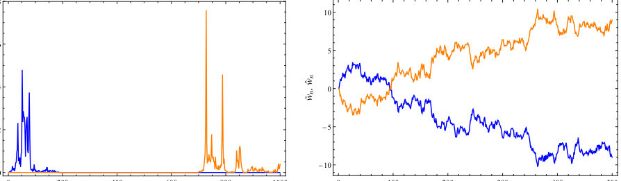
<figcaption class="paper-figure-caption"><b>Fig 1.</b> Figure 1: The first plot shows n ∈{1, . . . , N} 7→|ϕE n |2 of ϕE ∈CN of the smallest positive eigenvalue E = EN 1 for a typical realization HN of the random hopping Hamiltonian for N = 1000 and tn drawn uniformly from [1.7, 4.5]. Here the two colors show the odd and even components of ϕE on the odd and even sites respectively. The right plot shows the associated random walks ˜w and ˆw for the same configuration.</figcaption>
</figure>
<figure class="paper-figure-card">
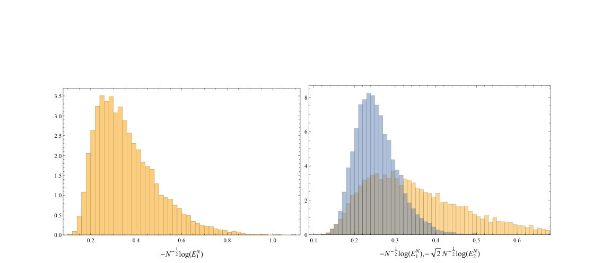
<figcaption class="paper-figure-caption"><b>Fig 2.</b> Figure 2: The first histogram shows the suitably scaled logarithm of the lowest energy EN 1 for N = 1000 and 10000 samples. The distribution of the hopping parameters are drawn uniformly from [1.7, 4.5]. The second plot shows also shows the distribution of the second eigenvalue EN 2 (in blue), taking into account the factor √</figcaption>
</figure>
<figure class="paper-figure-card">
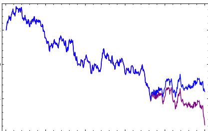
<figcaption class="paper-figure-caption"><b>Fig 3.</b> Figure 3: Comparison of log(|˜Φ EN 1 n |) (in purple) with log(|˜Ψn|) = ˜wn −log( √</figcaption>
</figure>
<figure class="paper-figure-card">
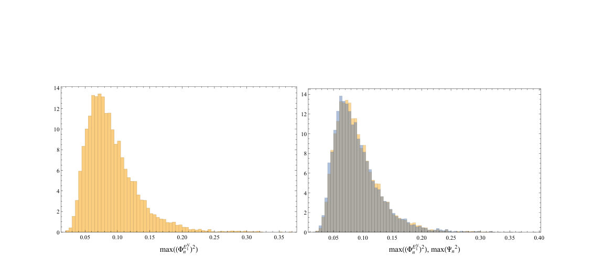
<figcaption class="paper-figure-caption"><b>Fig 4.</b> Figure 4: Histogram of the value of the normalized eigenstate ΦEN 1 at the localization center for 10000 samples (computed with the Arnoldi algorithm) and, in the second plot, comparison with the distribution with the maximal value of the normalized random walk ˜Ψ.</figcaption>
</figure>
</div>

<p><strong>Summary.</strong> This paper analyzes quantum transport in disordered, one-dimensional chiral quantum systems near topological phase transitions. It proves that the quantum dynamics cause the position moments to grow logarithmically with time, mirroring classical Sinai diffusion. The analysis achieves this by relating the system's lowest energy eigenstate to the exponential of a random walk.</p>
<p><strong>Why it may be interesting.</strong> The connection between quantum transport, localization phenomena, and classical diffusion models (Sinai) in the presence of disorder is highly relevant to understanding energy transport in disordered quantum materials.</p>
<details>
<summary>Detailed structure</summary>
<p><strong>Main problem.</strong> The paper investigates the quantum dynamics and transport properties at disorder-driven topological phase transitions in one-dimensional chiral quantum systems.</p>
<p><strong>Main result.</strong> The quantum dynamics leads to a logarithmic growth of the moments of the position operator, similar to classical Sinai diffusion, providing a rigorous lower bound for this transport.</p>
<p><strong>Method.</strong> The analysis uses spectral theory, approximating the lowest energy eigenfunction by the exponential of a random walk, and deriving lower bounds for time-averaged position moments.</p>
<p><strong>Model / system.</strong> The system is modeled by a random hopping Hamiltonian ($H_N$), which serves as a toy model for disorder-driven topological phase transitions in quasi-one-dimensional chiral Hamiltonians.</p>
<p><strong>Key observables.</strong> Time- and disorder-averaged $q$-th moments of the position operator ($M_N^q(T)$), the smallest positive eigenvalue ($E_{N,1}$), and the eigenfunction components ($\phi_E$).</p>
<p><strong>Important parameters / regimes.</strong> The time scale $T$ is analyzed in a specific regime, $e^{c_1 N^\alpha} \le T \le e^{c_2 N^\alpha}$, and the system size $N$ is crucial.</p>
<p><strong>Assumptions / limitations.</strong> The proof relies on approximating the eigenstate by the exponential of a random walk and focusing on the diagonal terms in the moment expansion.</p>
<p><strong>Figures summary.</strong> Figures illustrate the spatial profile of the smallest eigenvalue eigenfunction and associated random walks, and compare the distributions of the maximal eigenfunction values against zero-energy state predictions.</p>
<p><strong>Paper structure.</strong> The work progresses by analyzing the spectral properties of the chiral Hamiltonian, establishing the relationship between the eigenstate and random walks, and finally deriving a rigorous lower bound for the position moments using these approximations.</p>
</details>
<details>
<summary>Abstract</summary>
<p>The random hopping Hamiltonian is a toy model for a disorder-driven topological phase transitions in one-dimensional chiral Hamiltonians. It has a vanishing Lyapunov exponent and a Dyson peak in the density of states at zero energy. This work shows how the quantum dynamics leads to a logarithmic growth of the moments of the position operator, similar as in classical Sinai diffusion. The mechanism at the origin of this phenomenon is that the eigenfunction of the smallest eigenvalue is well-approximated by the exponential of a classical random walk, leading to two essentially independent subexponential localization centers.</p>
</details>
<p><sub><a href="#top">↑ back to top</a></sub></p>

<p><a id="paper-2609.30256"></a></p>
<h3 id="quantum-feature-selection-for-biomedical-data-analysis"><a href="http://arxiv.org/abs/2609.30256v1">Quantum Feature Selection for Biomedical Data Analysis</a></h3>
<p><strong>Authors:</strong> Hongbin Liu, Robert Lahmann, Benjamin Campbell, Zhemin Zhang, Zhiding Liang, Siona Bapat, Juergen Hahn<br>
<strong>Type:</strong> both · <strong>Category:</strong> quantum information and computing · <strong>PDF:</strong> <a href="https://arxiv.org/pdf/2609.30256v1">https://arxiv.org/pdf/2609.30256v1</a><br>
<strong>Analysis basis:</strong> full PDF text, analyzed in chunks
<strong>Topic relevance:</strong> <code>QC/QI experiment</code> <strong>1/5</strong></p>
<div class="figure-strip-hint">↔ Scroll figures horizontally</div>
<div class="paper-figures-scroll">
<figure class="paper-figure-card">
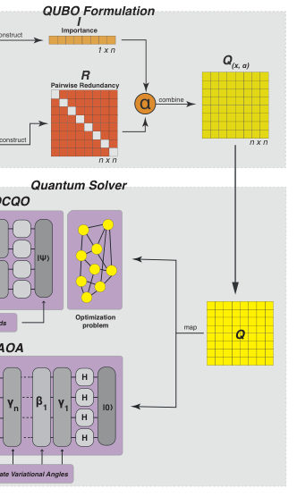
<figcaption class="paper-figure-caption"><b>Fig 1.</b> Fig. 1 The quantum feature selection pipeline. From a given dataset, the Fisher scores Fi and pairwise covariances Cij are calculated to obtain the importance vector I and redundancy matrix R. These terms are combined with a parameter α to construct the QUBO objective Q(x, α) in Eq. 2. The QUBO is mapped to the corresponding Ising optimization problem in Eq. 5 and solved using either BF-DCQO or QAOA. The resulting binary vector x∗indicates the selected features.</figcaption>
</figure>
<figure class="paper-figure-card">
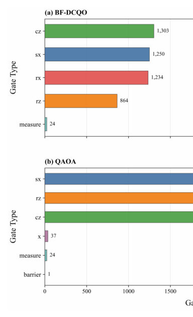
<figcaption class="paper-figure-caption"><b>Fig 2.</b> Fig. 2 Transpiled circuit gate counts for (a) BF-DCQO and (b) QAOA. For a 24 input features, BF-DCQO required 4,675 gates with a circuit depth of 777, and QAOA required 8,731 gates with a circuit depth of 2,011. Both circuits were mapped to 120 physical qubits with a circuit width of 144.</figcaption>
</figure>
<figure class="paper-figure-card">
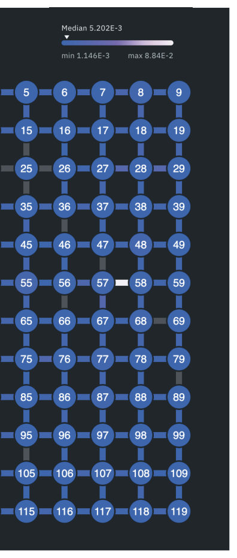
<figcaption class="paper-figure-caption"><b>Fig 3.</b> Fig. 3 Coupling map of ibm rensselaer. Nodes and their color represent physical qubits and their readout errors. Edges and their color represent available two qubit couplings and the corresponding controlled-Z (CZ) gate errors.</figcaption>
</figure>
<figure class="paper-figure-card">
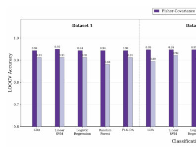
<figcaption class="paper-figure-caption"><b>Fig 4.</b> Fig. 4 LOOCV accuracy of LDA, linear SVM, LR, RF, and PLS-DA on Datasets 1, 2, and 3. The classifiers are trained on (1) 5 features selected by our proposed QUBO (Fisher-Covariance QUBO), and (2) 5 features selected by MIQUBO, both using BF-DCQO.</figcaption>
</figure>
<figure class="paper-figure-card">
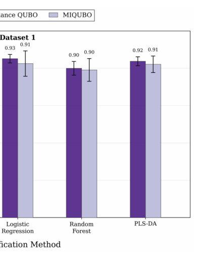
<figcaption class="paper-figure-caption"><b>Fig 5.</b> Fig. 5 LOOCV accuracy of LDA, linear SVM, LR, RF, and PLS-DA on Dataset 1 using 5 feature subsets selected by the proposed QUBO and MIQUBO with QAOA. Results are averaged over 10 independent QAOA runs for each QUBO formulation, with error bars representing one standard deviation.</figcaption>
</figure>
</div>

<p><strong>Summary.</strong> This work proposes using quantum optimization techniques to solve feature selection for complex biomedical data. It formulates the problem as minimizing a QUBO objective that balances feature importance and redundancy. The authors test this on quantum simulators and hardware, demonstrating feasibility while comparing performance against state-of-the-art classical methods.</p>
<p><strong>Why it may be interesting.</strong> While the application is in biomedicine, the core methodology involves mapping a complex combinatorial optimization problem (feature selection) onto quantum hardware models (QUBO/Ising), which is a direct application of quantum computation theory.</p>
<details>
<summary>Detailed structure</summary>
<p><strong>Main problem.</strong> The paper addresses the challenge of feature selection in high-dimensional biomedical data, specifically metabolomics, where the number of features vastly exceeds the number of samples.</p>
<p><strong>Main result.</strong> The proposed QUBO formulation achieves competitive classification performance compared to classical methods and demonstrates hardware feasibility on NISQ devices, although it does not claim quantum advantage.</p>
<p><strong>Method.</strong> The problem is formulated as minimizing a QUBO objective function that balances feature relevance (using Fisher score) against feature redundancy (using covariance). This optimization is solved using quantum algorithms like QAOA and BF-DCQO.</p>
<p><strong>Model / system.</strong> The core model is the QUBO formulation, which is mapped onto an Ising cost Hamiltonian ($H_C$). This Hamiltonian is then solved using quantum optimization algorithms (QAOA, BF-DCQO) on a quantum gate-based computer.</p>
<p><strong>Key observables.</strong> LOOCV accuracy across multiple classifiers (LDA, SVM, RF, etc.), circuit gate counts, and the convergence behavior of the quantum sampling distribution.</p>
<p><strong>Important parameters / regimes.</strong> The balancing parameter $\alpha \in [0, 1]$, which weights the trade-off between feature relevance and redundancy.</p>
<p><strong>Assumptions / limitations.</strong> The results are limited by current NISQ hardware constraints and do not claim a quantum advantage; the QUBO formulation only accounts for quadratic interactions.</p>
<p><strong>Figures summary.</strong> Figure 1 illustrates the entire quantum feature selection pipeline from data input to quantum solver output. Figure 2 compares the gate counts required by BF-DCQO and QAOA for a 24-feature instance. Figure 7 shows the convergence of BF-DCQO sampling distribution over iterations.</p>
<p><strong>Paper structure.</strong> The paper first establishes the need for feature selection in metabolomics. It then details the novel QUBO formulation using Fisher scores and covariance. The methodology section describes mapping this to an Ising Hamiltonian and applying quantum solvers (QAOA, BF-DCQO) alongside classical baselines (ITS, filter/wrapper methods). Finally, results are presented comparing performance and feasibility.</p>
</details>
<details>
<summary>Abstract</summary>
<p>Feature selection is an essential step for reducing complexity of high dimensional data, usually in preparation for developing machine learning models such as computational biomarkers. However, there are limitations associated with feature selection such as for metabolomic data where there are hundreds or even thousands of features per study participant, while the available number of participants in a clinical trials is limited. Classical methods such as exhaustive search require evaluation of all possible feature combinations, making them costly in terms of computation and runtime, or even infeasible, as feature dimensionality increases. In this study, we propose a novel Quadratic Unconstrained Binary Optimization (QUBO) coefficient formulation and pose metabolomic feature selection as a QUBO problem that selects a specified number of features by balancing their relevance against redundancy among the selected variables. To evaluate our proposed QUBO objective function, we conducted a series of experiments using Bias-Field Digitized Counterdiabatic Quantum Optimization (BF-DCQO) and Quantum Approximate Optimization Algorithm (QAOA) on a quantum gate based computer. We also compared the method to several classical methods on three metabolomic datasets associated with Autism Spectrum Disorder (ASD) on a classical computer. Our method reduces runtime compared with exhaustive search and Iterative Tabu Search (ITS) and achieves competitive performance across classifiers compared to classical filter, wrapper, and embedded methods. These results do not claim quantum advantage; rather, they establish hardware feasibility and demonstrate the current capabilities of Noisy Intermediate-Scale Quantum (NISQ) devices.</p>
</details>
<p><sub><a href="#top">↑ back to top</a></sub></p>

<p><a id="paper-2609.29472"></a></p>
<h3 id="selective-strain-tuning-of-nonequilibrium-multiferroic-dynamics-in-bifeomath590math"><a href="http://arxiv.org/abs/2609.29472v1">Selective strain tuning of nonequilibrium multiferroic dynamics in BiFeO$_\text3$</a></h3>
<p><strong>Authors:</strong> Chenhang Xu, Patrick Liu, Bo Zhang, Minyong Han, Henry G. Bell, Cameron J. R. Duncan, Yusong Liu, Patrick L. Kramer, Randy Lemons, Jake D. Koralek, Alexander H. Reid, Dong Qian, Harold Y. Hwang, Alfred Zong<br>
<strong>Type:</strong> experiment · <strong>Category:</strong> strongly correlated electrons · <strong>PDF:</strong> <a href="https://arxiv.org/pdf/2609.29472v1">https://arxiv.org/pdf/2609.29472v1</a><br>
<strong>Analysis basis:</strong> full PDF text, analyzed in chunks
<strong>Topic relevance:</strong> <code>quantum measurements</code> <strong>1/5</strong></p>
<div class="figure-strip-hint">↔ Scroll figures horizontally</div>
<div class="paper-figures-scroll">
<figure class="paper-figure-card">
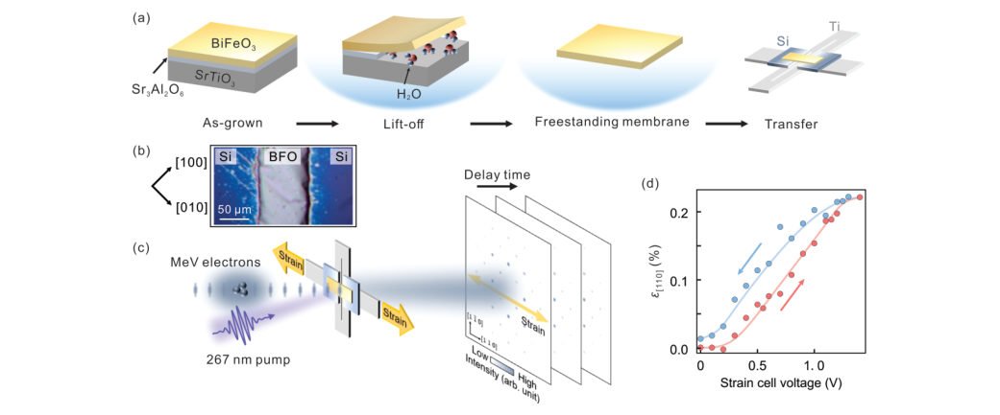
<figcaption class="paper-figure-caption"><b>Fig 1.</b> FIG. 1. Experimental setup for in situ straining of large-area, freestanding thin films in ultrafast electron diffraction. (a) Steps for thin film fabrication: (i) an as-grown heterostructure is prepared by pulsed laser deposition; (ii) the sacrificial Sr3Al2O6 layer is selectively etched in water; (iii) a millimeter-sized freestanding BiFeO3 film floats to the water surface; (iv) a scoop is used to transfer the film onto the gap in a silicon chip, which is affixed to a titanium plate mounted on a piezoelectric strain actuator (not drawn). (b) Optical image of the freestanding membrane suspended across the silicon gap. (c) Schematic of the ultrafast electron diffraction setup with in situ...</figcaption>
</figure>
<figure class="paper-figure-card">
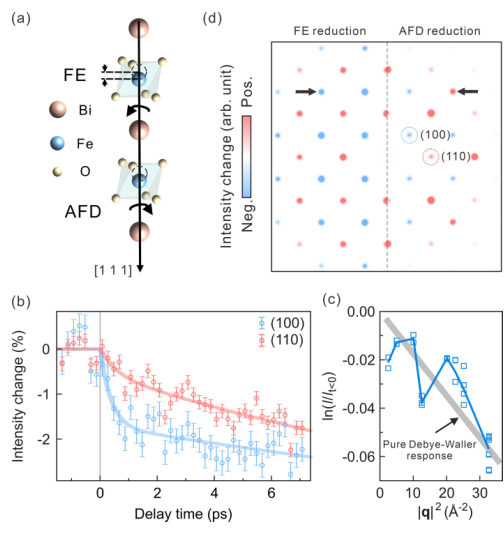
<figcaption class="paper-figure-caption"><b>Fig 2.</b> FIG. 2. Two structural distortions associated with the mul- tiferroic orders in BiFeO3 and their effects on the diffraction pattern. (a) Schematic of the off-center displacement of Fe atoms that underpins the ferroelectric (FE) order, and of the antiferrodistortive (AFD) rotation of oxygen octahedra that modulates the magnetic order. (b) Photoinduced in- tensity changes of the (100) peak (blue) and the (110) peak (red) in the unstrained state after excitation by a 267-nm, 5-mJ/cm2 pulse. Intensities are normalized by their averaged values before photoexcitation. Curves are fits to Eq. (S3) in the Supplemental Material. (c) Logarithmic intensity change ln[I(q, t)/I(q, t &lt; 0)] for each Bragg...</figcaption>
</figure>
<figure class="paper-figure-card">
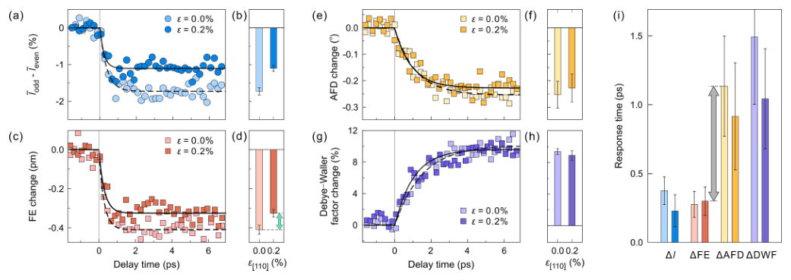
<figcaption class="paper-figure-caption"><b>Fig 3.</b> FIG. 3. Lattice dynamics at different strain states. (a,b) Photoinduced changes of (a) the averaged differential intensities between h + k = odd and even peaks and (b) the long-time amplitudes. (c–h) Photoinduced structural changes extracted from the global fitting procedure (see Sec. S3 in the Supplemental Material): (c) FE displacement, (e) AFD rotation angle, and (g) Debye–Waller factor [DWF, as represented by ⟨u2(t)⟩in Eq. (1)], together with their corresponding long-time amplitudes (d,f,h) at different strain states. Markers represent experimentally extracted data while curves are fits to Eq. (S3) with only single-exponential dynamics (i.e., setting A2 to zero). Light-colored (or...</figcaption>
</figure>
<figure class="paper-figure-card">
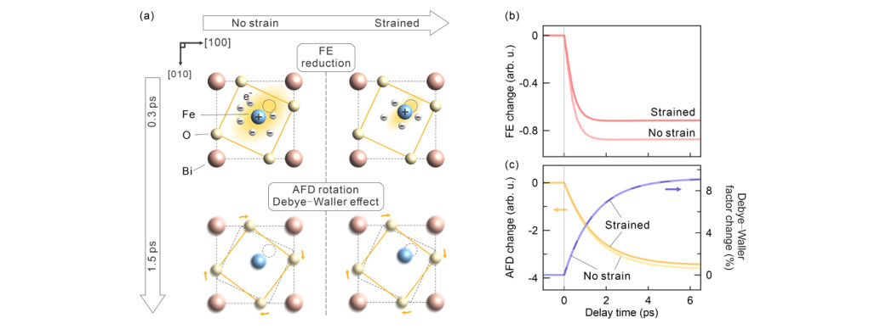
<figcaption class="paper-figure-caption"><b>Fig 4.</b> FIG. 4. Distinct mechanisms for photoinduced dynamics of ferroelectric displacement and antiferrodistortive rotation. (a) Schematic illustration of the strain-selective atomic pathways following above-gap photoexcitation, shown without strain (left column) and with tensile strain (right column). Dashed circles indicate the initial Fe positions, orange arrows denote the oxygen octahedral rotation in the AFD mode, and blurred atoms represent isotropic thermal vibrations. In the top right panel, the strain-induced reduction of mobile electron density (yellow shade) signifies weaker carrier screening, which selectively affects the ferroelectric displacement but not the AFD rotation. (b,c)...</figcaption>
</figure>
</div>

<p><strong>Summary.</strong> This work demonstrates the ability to selectively control the ultrafast dynamics of coupled ferroelectric and magnetic orders in $ ext{BiFeO}_3$ by applying tensile strain. Using ultrafast electron diffraction, the researchers showed that strain specifically dampens the ferroelectric response without affecting the magnetic (AFD) response. This establishes strain as a powerful tool for engineering non-equilibrium phase control in correlated multiferroics.</p>
<p><strong>Why it may be interesting.</strong> The selective control demonstrated here—tuning one order parameter while preserving another—is a key concept in designing quantum materials for advanced applications, relevant to understanding coupled dynamics in complex quantum systems.</p>
<details>
<summary>Detailed structure</summary>
<p><strong>Main problem.</strong> The core challenge is achieving selective, non-equilibrium control over multiple coupled order parameters (like ferroelectric and magnetic) in quantum multiferroic materials.</p>
<p><strong>Main result.</strong> Tensile strain selectively suppresses the ultrafast photoinduced dynamics associated with the ferroelectric order parameter, while leaving the dynamics related to the magnetic order parameter largely unaffected.</p>
<p><strong>Method.</strong> The study uses <em>in situ</em> tensile strain tuning applied to freestanding $    ext{BiFeO}_3$ membranes, probed by MeV ultrafast electron diffraction following photoexcitation.</p>
<p><strong>Model / system.</strong> The system is the multiferroic $    ext{BiFeO}_3$, which exhibits coupled ferroelectric (FE) and antiferrodistortive (AFD) orders. The experiment probes the ultrafast lattice dynamics associated with these two distinct order parameters.</p>
<p><strong>Key observables.</strong> Photoinduced lattice dynamics, specifically the time evolution of FE displacement and AFD rotation, measured via changes in Bragg peak intensities ($\overline{I}_{	ext{odd}} - \overline{I}_{	ext{even}}$).</p>
<p><strong>Important parameters / regimes.</strong> Tunable uniaxial tensile strain ($\sim 0.2\%$), ultrafast time scales (sub-picosecond), and varying pump laser fluences.</p>
<p><strong>Assumptions / limitations.</strong> The analysis distinguishes between structural changes (FE/AFD reduction) and transient lattice heating (Debye-Waller effect).</p>
<p><strong>Figures summary.</strong> Figures illustrate the experimental setup, the comparison of measured intensity changes against simple Debye-Waller scaling, and the time evolution of FE and AFD dynamics under varying strain and fluence.</p>
<p><strong>Paper structure.</strong> The paper establishes the experimental platform, presents measurements showing the differential strain response of FE vs. AFD dynamics, and uses modeling (Ginzburg-Landau) to attribute the selective tuning to strain-mediated changes in carrier screening effects.</p>
</details>
<details>
<summary>Abstract</summary>
<p>Quantum materials are characterized by intertwined orders, and a fundamental goal in condensed matter physics is to achieve their selective control in such a way that one order parameter can be tuned while leaving others largely unaffected. Although significant progress has been made in thermal equilibrium, realizing such control out of equilibrium remains highly challenging. Here we employed \textit{in situ} tensile strain to selectively manipulate the photoinduced lattice dynamics associated with ferroelectric and magnetic orders in multiferroic BiFeO$_3$. By applying MeV ultrafast electron diffraction to freestanding BiFeO$_3$ membranes under tunable strain, we showed that tensile strain markedly suppresses the ultrafast photoinduced reduction of the ferroelectric displacement. By contrast, the photoinduced dynamics of the antiferrodistortive rotation of the oxygen octahedra, which modulates the magnetic order, remains insensitive to strain. Not only do these findings reveal distinct microscopic pathways underlying nonequilibrium multiferroic dynamics, they also establish tunable strain as an effective route for engineering ultrafast phase control in correlated materials.</p>
</details>
<p><sub><a href="#top">↑ back to top</a></sub></p>

<p><a id="paper-2609.30149"></a></p>
<h3 id="sharp-universal-death-of-entanglement-threshold-for-pauli-hamiltonians"><a href="http://arxiv.org/abs/2609.30149v1">Sharp universal death of entanglement threshold for Pauli Hamiltonians</a></h3>
<p><strong>Authors:</strong> Bobak T. Kiani<br>
<strong>Type:</strong> theory · <strong>Category:</strong> statistical mechanics · <strong>PDF:</strong> <a href="https://arxiv.org/pdf/2609.30149v1">https://arxiv.org/pdf/2609.30149v1</a><br>
<strong>Analysis basis:</strong> full PDF text, analyzed in chunks
<strong>Topic relevance:</strong> <code>analog quantum simulation</code> <strong>1/5</strong></p>
<div class="figure-strip-hint">↔ Scroll figures horizontally</div>
<div class="paper-figures-scroll">
<figure class="paper-figure-card">
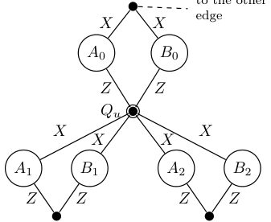
<figcaption class="paper-figure-caption"><b>Fig 1.</b> Figure 1: A commuting tree Hamiltonian, illustrated for b = 2. Solid vertices represent Hamiltonian terms and there are two qubits, an A and B qubit, per edge (see open circles on the right hand side). The right panel expands the three edges incident to u. Incoming and outgoing edges apply ZZ and XX respectively on a vertex. The term Qu therefore has a ZZ applied to the qubit pair on its incoming edge e0, and XX applied to each qubit pair on its outgoing edges e1, e2.</figcaption>
</figure>
</div>

<p><strong>Summary.</strong> This work precisely calculates the critical inverse temperature ($eta$) at which the Gibbs state of a Pauli Hamiltonian transitions from being separable (product state mixture) to entangled. The threshold, $z_\Delta$, depends universally on the maximum degree ($\Delta$) of the Hamiltonian's term-overlap graph. This provides a powerful tool for understanding thermal decoherence and entanglement decay in quantum many-body systems.</p>
<p><strong>Why it may be interesting.</strong> It provides a rigorous, quantitative threshold for when quantum correlations (entanglement) are expected to vanish in thermal equilibrium for local Hamiltonians, which is crucial for understanding quantum phase transitions in many-body systems.</p>
<details>
<summary>Detailed structure</summary>
<p><strong>Main problem.</strong> The paper determines the exact universal high-temperature separability threshold for Gibbs states generated by Pauli Hamiltonians.</p>
<p><strong>Main result.</strong> A sharp threshold $z_\Delta$ is established: the Gibbs state is separable if the inverse temperature $eta$ is below $z_\Delta$, and entangled otherwise.</p>
<p><strong>Method.</strong> The proof uses inclusion-exclusion formulas and graph theory arguments applied to the term-overlap graph structure of the Hamiltonian.</p>
<p><strong>Model / system.</strong> The system is a quantum many-body system governed by a Gibbs state $
ho_eta(H) = e^{-eta H} /  ext{Tr}(e^{-eta H})$, where $H$ is a Pauli Hamiltonian whose terms are constrained by a maximum overlap degree $\Delta$.</p>
<p><strong>Key observables.</strong> Separability of the Gibbs state, the inverse temperature $eta$, and the threshold $z_\Delta$.</p>
<p><strong>Important parameters / regimes.</strong> The maximum degree $\Delta$ of the term-overlap graph, and the critical temperature $z_\Delta = 	ext{arctanh}\left[\max_{0\le x \le 1}x\left(rac{1-x}{1+x}
ight)^{\Delta-1}
ight]$.</p>
<p><strong>Assumptions / limitations.</strong> The analysis often focuses on the structure of the term-overlap graph, particularly when it is a tree, to derive the sharpest threshold.</p>
<p><strong>Figures summary.</strong> Figure 1 illustrates the structure of a commuting tree Hamiltonian for specific parameters ($\Delta=3, b=2$), showing the relationship between terms and qubits on edges.</p>
<p><strong>Paper structure.</strong> The paper develops the threshold determination using decomposition techniques (inclusion-exclusion) to establish the separability criterion, followed by detailed analysis on the structure of the graph to find the critical temperature $z_\Delta$, and concludes with efficient sampling algorithms for the separable regime.</p>
</details>
<details>
<summary>Abstract</summary>
<p>We determine the exact universal high-temperature separability threshold for Pauli Hamiltonians of bounded degree $Δ\ge2$. If every coefficient in the Hamiltonian has magnitude at most one and each term has overlapping support with at most $Δ$ other terms, the Gibbs state is a mixture of product Pauli eigenstates whenever \[   β\le z_Δ:= \operatorname{arctanh}\left[\max_{0\le x \le 1}x\left(\frac{1-x}{1+x}\right)^{Δ-1} \right]. \] For every $β>z_Δ$, a finite commuting Hamiltonian with maximum overlap degree at most $Δ$ has an entangled Gibbs state. At any fixed $β<z_Δ$ strictly below the threshold, a classical polynomial-time algorithm produces samples from a distribution over product Pauli eigenstates approximating the Gibbs state in trace distance.</p>
</details>
<p><sub><a href="#top">↑ back to top</a></sub></p>
<h2 id="other-papers-26">Other papers (26)</h2>
<p><em>Papers from primary archives without highlighted authors or any topic match. Click to expand.</em></p>
<details>
<summary>Show other papers</summary>

<p><a id="paper-2609.29856"></a></p>
<h3 id="a-block-decomposed-qubo-workflow-for-chromosome-y-phylogeny-reconstruction"><a href="http://arxiv.org/abs/2609.29856v1">A Block Decomposed QUBO Workflow for Chromosome-Y Phylogeny Reconstruction</a></h3>
<p><strong>Authors:</strong> Giuliana Siddi Moreau, Riccardo Berutti, Manuela Profir, Lorenzo Pisani, Maria Laura Clemente, Lidia Leoni<br>
<strong>Type:</strong> theory · <strong>Category:</strong> quantum information and computing · <strong>PDF:</strong> <a href="https://arxiv.org/pdf/2609.29856v1">https://arxiv.org/pdf/2609.29856v1</a><br>
<strong>Analysis basis:</strong> full PDF text, analyzed in chunks</p>
<div class="figure-strip-hint">↔ Scroll figures horizontally</div>
<div class="paper-figures-scroll">
<figure class="paper-figure-card">
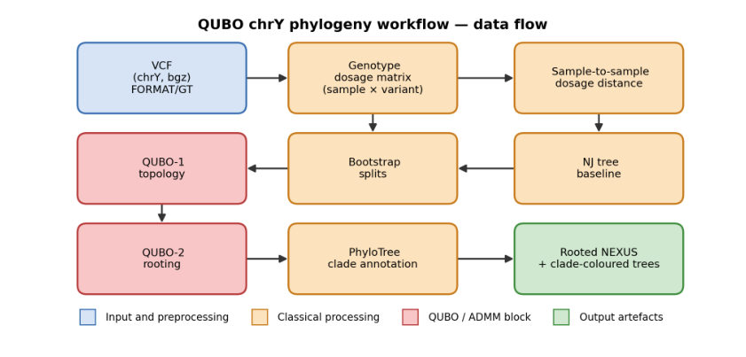
<figcaption class="paper-figure-caption"><b>Fig 1.</b> Figure 1: Data-flow of the workflow. Blue = input and preprocessing (the VCF read via FORMAT/GT columns), or- ange = classical processing (genotype dosage matrix, sample-to-sample distance, NJ baseline, bootstrap, PhyloTree- Y clade annotation), red = QUBO optimization blocks (topology optimization, rooting optimization, and the shared ADMM/DCQO solver), green = output artefacts (rooted NEXUS plus the clade-coloured tree plots).</figcaption>
</figure>
<figure class="paper-figure-card">
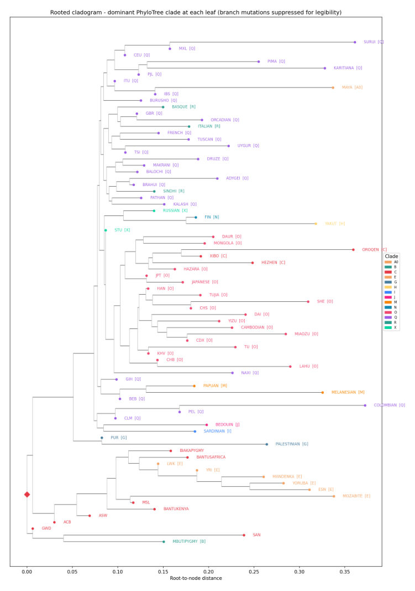
<figcaption class="paper-figure-caption"><b>Fig 2.</b> Figure 2: Rectangular phylogram of 78 male chromosome-Y samples reconstructed from a 150-sample gnomAD GRCh38 callset (chrY VCF), after removing 72 uninformative samples with no ALT call across the retained variants. The tree topology is obtained from the QUBO topology solve (QUBO-1), with branches placed on the rooting edge selected by the QUBO rooting solve (QUBO-2); both QUBOs are dispatched to the ADMM service with DCQO block solvers running on noise-free Cirq simulator.</figcaption>
</figure>
</div>
<p><strong>Summary.</strong> This work presents a novel computational workflow to reconstruct Y-chromosome phylogenies by formulating the problem as two QUBOs. It overcomes the limitations of single quantum processors by employing an Alternating Direction Method of Multipliers (ADMM) decomposition. The blocks are solved using a Digitized Counter-Diabatic Quantum Optimization (DCQO) solver, proving a scalable quantum approach for population genomics.</p>
<p><strong>Why it may be interesting.</strong> The paper demonstrates a sophisticated hybrid quantum-classical approach (ADMM + DCQO) to tackle a large-scale combinatorial optimization problem, showing how quantum techniques can scale beyond current hardware limitations.</p>
<details>
<summary>Detailed structure</summary>
<p><strong>Main problem.</strong> The paper addresses the computational challenge of reconstructing the phylogeny of human Y-chromosome populations from genetic data.</p>
<p><strong>Main result.</strong> The authors developed a scalable workflow that successfully applies QUBO optimization, decomposed via ADMM and solved using a DCQO quantum solver, to solve large-scale phylogenetic problems.</p>
<p><strong>Method.</strong> The core method involves casting the topology and root placement decisions into two QUBO formulations, which are then solved using an ADMM decomposition strategy combined with a DCQO gate-based quantum optimizer.</p>
<p><strong>Model / system.</strong> The problem is modeled using biallelic SNP data from VCF files, leading to QUBOs whose variables encode candidate splits and edges in the phylogenetic tree.</p>
<p><strong>Key observables.</strong> Support Score ($\sigma(S)$), Rooting Cost ($\hat{c}_e$), and the final reconstructed Nexus-annotated rooted tree.</p>
<p><strong>Important parameters / regimes.</strong> Penalty parameters $\lambda=5$, $\mu=2.5$, and $\eta=10$; the ADMM decomposition allows solving problems exceeding single QPU qubit budgets.</p>
<p><strong>Assumptions / limitations.</strong> The workflow assumes that the complex optimization problem can be accurately decomposed into smaller, manageable blocks solvable by current quantum hardware capabilities.</p>
<p><strong>Figures summary.</strong> Figure 1 details the eight functional stages of the workflow, showing data flow from VCF input through classical processing to the final QUBO optimization blocks and output tree.</p>
<p><strong>Paper structure.</strong> The paper outlines a multi-stage workflow: 1) VCF ingestion and distance matrix calculation; 2) Formulation of two QUBOs for topology and rooting; 3) Decomposition using ADMM; 4) Solving the blocks using DCQO; and 5) Final tree annotation.</p>
</details>
<details>
<summary>Abstract</summary>
<p>This paper sets out a computational workflow that reconstructs the phylogeny of human Y-chromosome populations from a Variant Call Format (VCF) file of biallelic Single Nucleotide Polymorphisms (SNP). The two classical phylogenetic decisions - topology selection and root placement - are cast as Quadratic Unconstrained Binary Optimisation (QUBO) problems. The workflow combines two QUBO formulations with an Alternating Direction Method of Multipliers (ADMM) decomposition strategy and a plug-in Digitized Counter-Diabatic Quantum Optimization (DCQO) solver, enabling large phylogenetic optimization problems to be executed across multiple classical or quantum computing resources. The DCQO gate-based optimizer drives each ADMM-block QUBO with short-depth counter-diabatic circuits in the impulse regime, without the necessity for an outer variational loop. The combination of ADMM decomposition and the DCQO block solver facilitates problem sizes that surpass the qubit budget of any individual digital quantum processing unit call, while maintaining the integrity of the original objective. The workflow extracts genotype information from VCF files, reconstructs topology and rooting through two QUBO formulations, and annotates the resulting tree using PhyloTree. The resultant data set comprises a Nexus-annotated rooted tree, in addition to diagnostic figures. The workflow demonstrates the potential of modest-scale QUBO formulations combined with ADMM decomposition to serve as a scalable alternative to greedy heuristics in the domain of population genomics.</p>
</details>
<p><sub><a href="#top">↑ back to top</a></sub></p>

<p><a id="paper-2609.30139"></a></p>
<h3 id="a-general-composition-theorem-for-approximate-degree"><a href="http://arxiv.org/abs/2609.30139v1">A General Composition Theorem for Approximate Degree</a></h3>
<p><strong>Authors:</strong> Samruddhi Pednekar, Supartha Podder<br>
<strong>Type:</strong> theory · <strong>Category:</strong> quantum information and computing · <strong>PDF:</strong> <a href="https://arxiv.org/pdf/2609.30139v1">https://arxiv.org/pdf/2609.30139v1</a><br>
<strong>Analysis basis:</strong> full PDF text, analyzed in chunks</p>
<div class="figure-strip-hint">↔ Scroll figures horizontally</div>
<div class="paper-figures-scroll">
<figure class="paper-figure-card">
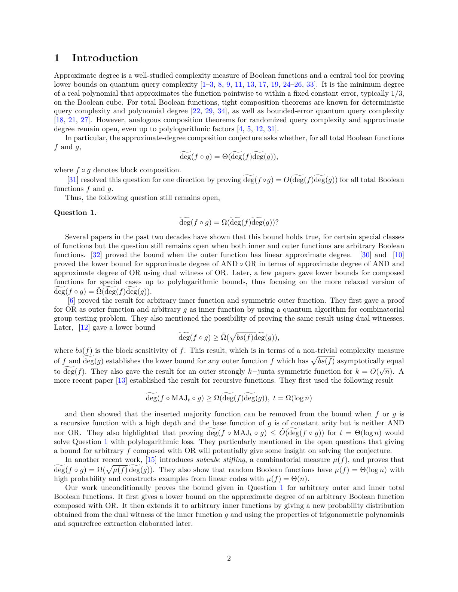
<figcaption class="paper-figure-caption"><b>Fig 1.</b> Low-resolution page preview, page 2</figcaption>
</figure>
<figure class="paper-figure-card">
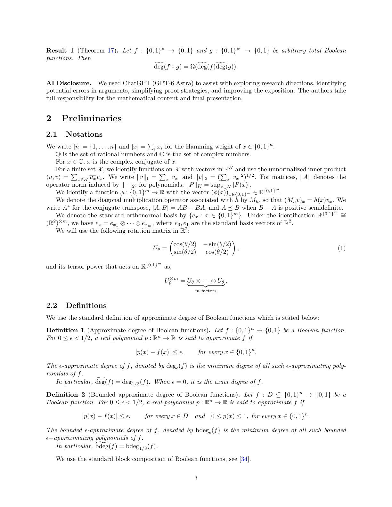
<figcaption class="paper-figure-caption"><b>Fig 2.</b> Low-resolution page preview, page 3</figcaption>
</figure>
<figure class="paper-figure-card">
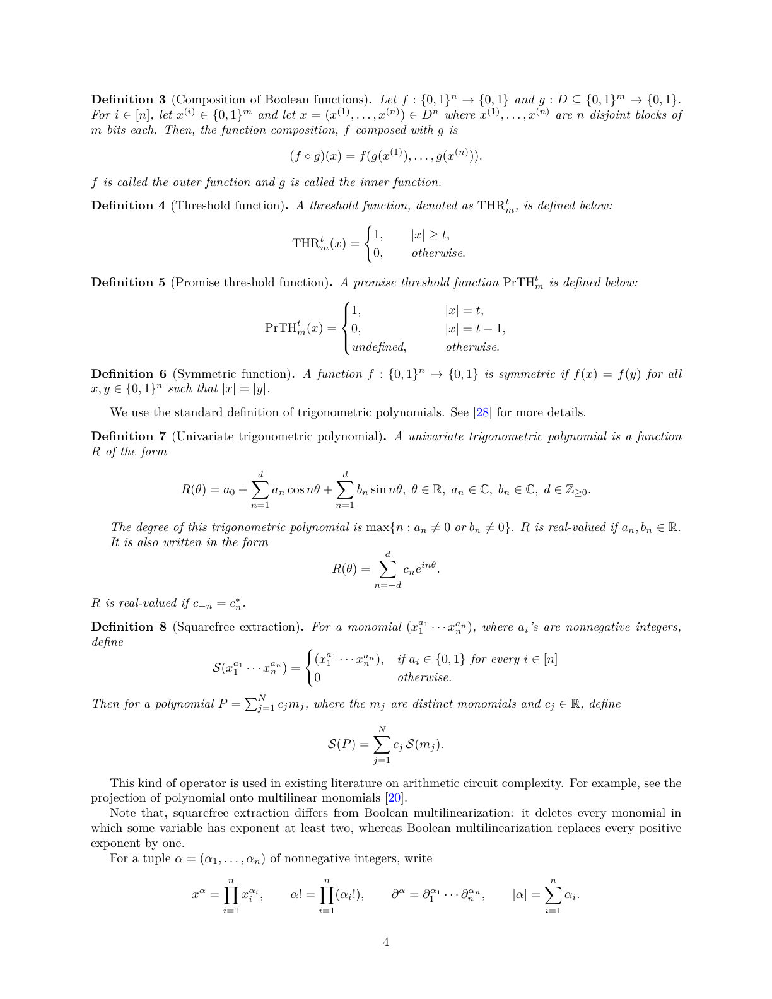
<figcaption class="paper-figure-caption"><b>Fig 3.</b> Low-resolution page preview, page 4</figcaption>
</figure>
<figure class="paper-figure-card">
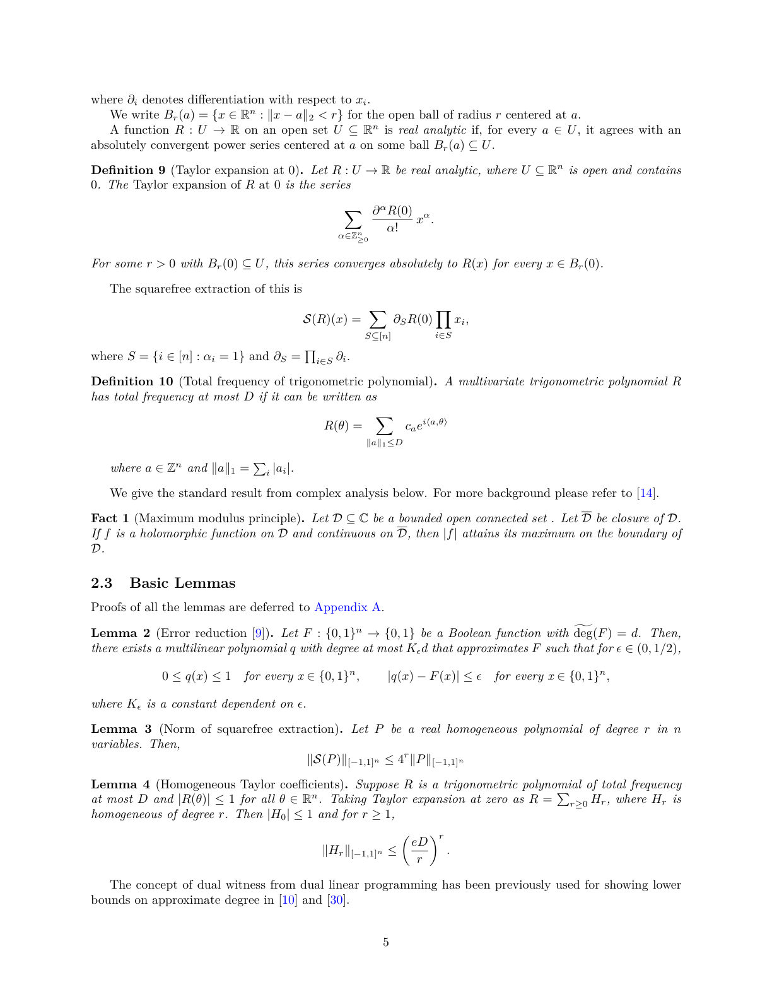
<figcaption class="paper-figure-caption"><b>Fig 4.</b> Low-resolution page preview, page 5</figcaption>
</figure>
<figure class="paper-figure-card">
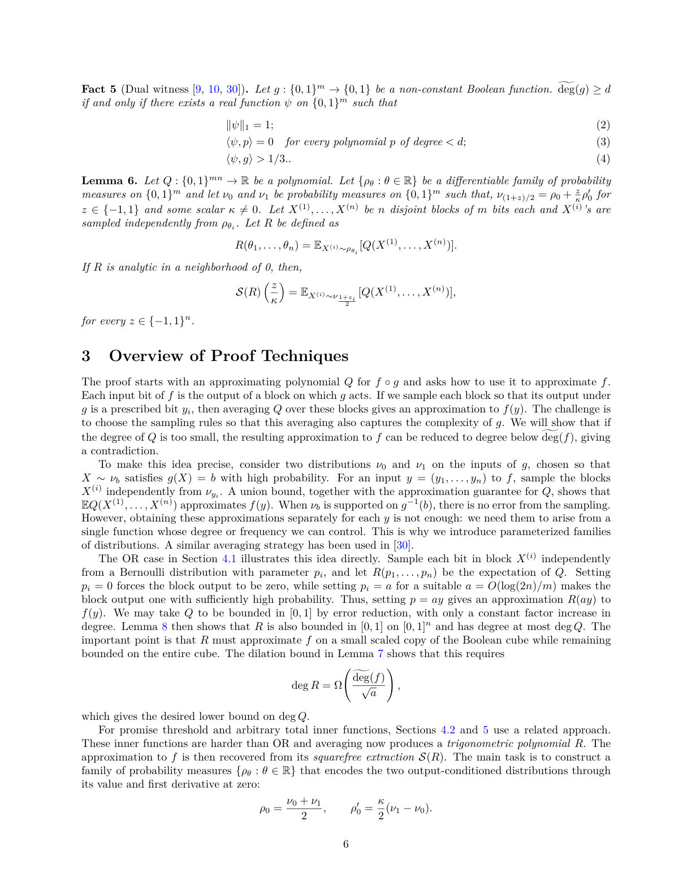
<figcaption class="paper-figure-caption"><b>Fig 5.</b> Low-resolution page preview, page 6</figcaption>
</figure>
</div>
<p><strong>Summary.</strong> This paper resolves a major open problem in Boolean function complexity by proving that the approximate degree of block-composed functions composes multiplicatively. The authors establish the tight bound $\widetilde{deg}(f\circ g) = \Theta(\widetilde{deg}(f)\,\widetilde{deg}(g))$ using sophisticated tools from harmonic analysis and polynomial approximation theory.</p>
<p><strong>Why it may be interesting.</strong> While the topic is in computational complexity theory, the use of polynomial approximation, spectral methods, and the connection to quantum query complexity makes it highly relevant to theoretical quantum information.</p>
<details>
<summary>Detailed structure</summary>
<p><strong>Main problem.</strong> The paper addresses the open question of whether the approximate degree of block-composed Boolean functions composes multiplicatively.</p>
<p><strong>Main result.</strong> It proves that for arbitrary total Boolean functions $f$ and $g$, the approximate degree satisfies $\widetilde{deg}(f\circ g) = \Theta(\widetilde{deg}(f)\,\widetilde{deg}(g))$.</p>
<p><strong>Method.</strong> The proof involves establishing a matching lower bound by using advanced techniques involving trigonometric polynomials, squarefree extraction, and constructing specific probability measures derived from dual witnesses.</p>
<p><strong>Model / system.</strong> The analysis is purely mathematical, focusing on the complexity measure known as the constant-error approximate degree ($\widetilde{deg}$) for total Boolean functions $f:\{0,1\}^n	o\{0,1\}$ and $g:\{0,1\}^m	o\{0,1\}$.</p>
<p><strong>Key observables.</strong> The approximate degree ($\widetilde{deg}$), the composition $f \circ g$, and the relationship $\widetilde{deg}(f\circ g) = \Theta(\widetilde{deg}(f)\,\widetilde{deg}(g))$.</p>
<p><strong>Important parameters / regimes.</strong> The approximation error $\epsilon$ (specifically $\epsilon=1/3$), the dimensions $n$ and $m$, and the degrees of the functions.</p>
<p><strong>Assumptions / limitations.</strong> The analysis relies on the existence of an approximating polynomial $Q$ and the ability to control the frequency and structure of averaged functions $R$ derived from probability measures $
ho_ heta$.</p>
<p><strong>Paper structure.</strong> The paper builds from establishing upper bounds (known results) to tackling the lower bound. It develops tools using trigonometric polynomials and spectral decomposition to relate expectations over product distributions to expectations under specific, structured distributions ($
u(1+z)/2$).</p>
</details>
<details>
<summary>Abstract</summary>
<p>A longstanding open question in Boolean function complexity asks whether approximate degree composes multiplicatively under block composition. Although a general multiplicative upper bound is known, matching lower bounds have previously been established only for restricted classes of functions. We resolve this question for all total Boolean functions by proving the matching lower bound. Together with Sherstov's upper bound, our result shows that, for every pair of total Boolean functions $f:\{0,1\}^n\to\{0,1\}$ and $g:\{0,1\}^m\to\{0,1\}$, \[ \widetilde{deg}(f\circ g) = Θ\!\left( \widetilde{deg}(f)\,\widetilde{deg}(g) \right), \] where $\widetilde{deg}$ denotes constant-error approximate degree.</p>
</details>
<p><sub><a href="#top">↑ back to top</a></sub></p>

<p><a id="paper-2609.28901"></a></p>
<h3 id="a-quantum-circuit-for-gaussian-elimination"><a href="http://arxiv.org/abs/2609.28901v1">A Quantum Circuit for Gaussian Elimination</a></h3>
<p><strong>Authors:</strong> Hochang Lee, Kyung Chul Jeong, Panjin Kim<br>
<strong>Type:</strong> theory · <strong>Category:</strong> quantum information and computing · <strong>PDF:</strong> <a href="https://arxiv.org/pdf/2609.28901v1">https://arxiv.org/pdf/2609.28901v1</a><br>
<strong>Analysis basis:</strong> full PDF text, analyzed in chunks</p>
<div class="figure-strip-hint">↔ Scroll figures horizontally</div>
<div class="paper-figures-scroll">
<figure class="paper-figure-card">
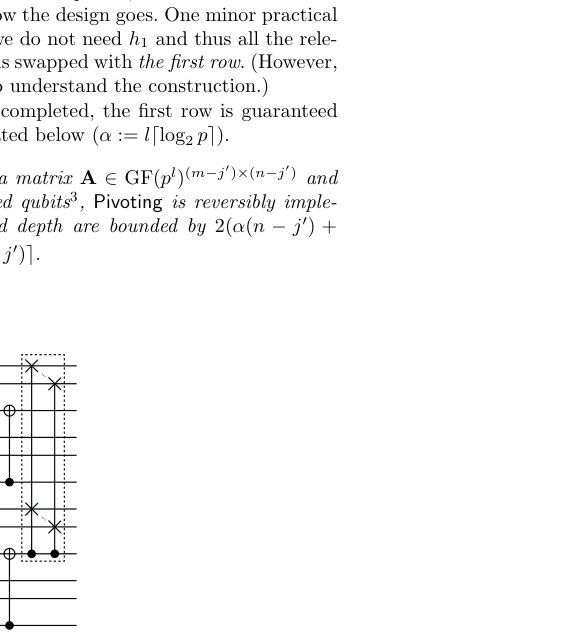
<figcaption class="paper-figure-caption"><b>Fig 1.</b> Fig. 3. A reversible implementation of Pivoting. Dashed boxes mark parallelizable subcircuits by using borrowed qubits.</figcaption>
</figure>
<figure class="paper-figure-card">
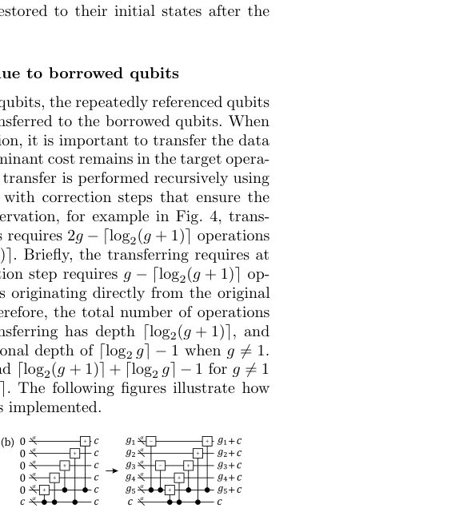
<figcaption class="paper-figure-caption"><b>Fig 2.</b> Fig. 4. Transfer of a value c to auxiliary qubits, either clean or borrowed. (a) illustrates the CNOT-based transfer of c: to clean qubits in the left circuit, and to borrowed qubits in the right circuit, whose initial values are g1, . . . , g5. (b) illustrates the analogous transfer based on addition: to clean qubits in the left circuit, and to borrowed qubits in the right circuit, again with initial values g1, . . . , g5. The (+) and (−) boxes indicate that the controlled value is added to or subtracted from the target value, respectively.</figcaption>
</figure>
<figure class="paper-figure-card">
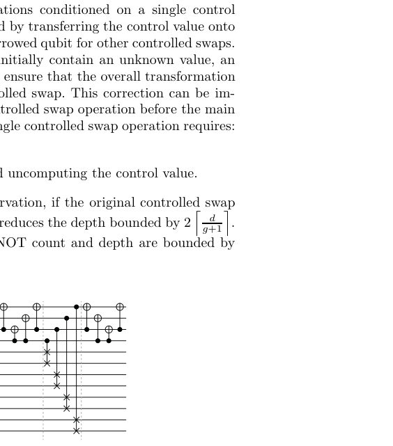
<figcaption class="paper-figure-caption"><b>Fig 3.</b> Fig. 5. Example illustrating the parallelization of four controlled swap operations sharing the same control qubit. The parallelized circuit has controlled swap depth 2.</figcaption>
</figure>
<figure class="paper-figure-card">
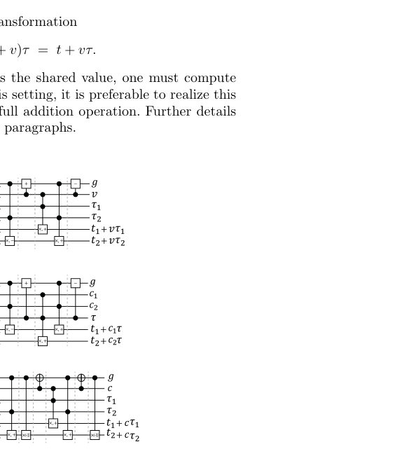
<figcaption class="paper-figure-caption"><b>Fig 4.</b> Fig. 6. (a), (b) and (c) illustrate the parallel implementations of the arithmetic oper- ations in the first and second phase of RowReduction using borrowed qubits. (a) shows the parallelization of the quantum–quantum multiplication in the first phase, while (b) and (c) show the parallelization of the controlled quantum–quantum addition in the second phase. (b) corresponds to the case of overlapping columns, and (c) to the case of overlapping rows. The (×, +) box denotes that the product of the two multiplicands is added to the target value, whereas the (×, −) box denotes that the corresponding product is subtracted from the target value. Moreover, the  × (−1)  box denotes a controlled...</figcaption>
</figure>
<figure class="paper-figure-card">
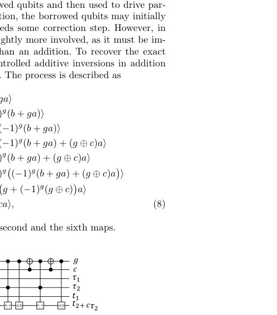
<figcaption class="paper-figure-caption"><b>Fig 5.</b> Fig. 7. Illustration of each map in Eq. (8). The box notation follows Fig. 6.</figcaption>
</figure>
</div>
<p><strong>Summary.</strong> This paper presents a generalized quantum circuit for performing Gaussian elimination over any finite field, overcoming previous limitations restricted to GF(2). By employing a pseudo row echelon form and breaking the process into modular quantum steps, the authors achieve a garbage-free circuit with optimal asymptotic depth scaling. This work advances the field by providing a scalable quantum subroutine for fundamental linear algebra tasks.</p>
<p><strong>Why it may be interesting.</strong> While focused on computation, the rigorous analysis of quantum circuit depth and resource scaling for fundamental linear algebra operations provides benchmarks for quantum computational complexity theory.</p>
<details>
<summary>Detailed structure</summary>
<p><strong>Main problem.</strong> The primary goal is to develop a quantum circuit implementation for Gaussian elimination, generalizing it beyond the restricted field GF(2) to any finite field GF(p^l).</p>
<p><strong>Main result.</strong> The authors successfully developed a generalized, garbage-free quantum circuit for Gaussian elimination that retains the best known asymptotic Toffoli depth up to logarithmic factors compared to previous GF(2) implementations.</p>
<p><strong>Method.</strong> The method involves modeling the elimination process using a reversible construction based on a 'pseudo row echelon form' and breaking the overall circuit into sequential quantum subroutines: Labeling, Pivoting, and Row Reduction.</p>
<p><strong>Model / system.</strong> The problem is modeled abstractly as implementing a linear map $f: \{0, 1\}^{x} 	o \{0, 1\}^{y}$ using quantum circuits, where field arithmetic operations (addition, inverse) are assumed to have existing reversible quantum implementations.</p>
<p><strong>Key observables.</strong> Toffoli count, Toffoli depth (time complexity), and temporary/supplemental space (qubit count).</p>
<p><strong>Important parameters / regimes.</strong> The field characteristic $p$ and extension degree $l$ defining the finite field GF($p^l$); matrix dimensions $m$ and $n$.</p>
<p><strong>Assumptions / limitations.</strong> The analysis assumes the universal gate set {NOT, CNOT, Toffoli} and relies on the existence of reversible quantum circuits for underlying arithmetic operations.</p>
<p><strong>Figures summary.</strong> Figures illustrate the quantum circuit design for specific steps like Labeling and Pivoting, and Tables summarize the derived quantum costs (Toffoli count and depth) for various field types.</p>
<p><strong>Paper structure.</strong> The paper introduces the problem, develops the necessary pseudo row echelon form, and then details the quantum circuit construction by breaking the process into four reversible steps: Labeling, Pivoting, Row reduction (in two phases), and Deleting the pivot index. Complexity analysis is performed throughout.</p>
</details>
<details>
<summary>Abstract</summary>
<p>A quantum circuit for Gaussian elimination is developed in this work. While previous quantum implementations of Gaussian elimination were restricted to $\mathrm{GF}(2)$, the proposed design is generalized to any finite field. Compared with previous works in $\mathrm{GF}(2)$, the developed circuit achieves garbage-free construction while retaining the best known asymptotic Toffoli depth up to logarithmic factors.</p>
</details>
<p><sub><a href="#top">↑ back to top</a></sub></p>

<p><a id="paper-2609.29917"></a></p>
<h3 id="computational-cryptography-from-pseudoentanglement"><a href="http://arxiv.org/abs/2609.29917v1">Computational Cryptography from Pseudoentanglement</a></h3>
<p><strong>Authors:</strong> Ilia Ryzov, Manuel Goulão, Faedi Loulidi, David Elkouss<br>
<strong>Type:</strong> theory · <strong>Category:</strong> quantum information and computing · <strong>PDF:</strong> <a href="https://arxiv.org/pdf/2609.29917v1">https://arxiv.org/pdf/2609.29917v1</a><br>
<strong>Analysis basis:</strong> full PDF text, analyzed in chunks</p>
<div class="figure-strip-hint">↔ Scroll figures horizontally</div>
<div class="paper-figures-scroll">
<figure class="paper-figure-card">
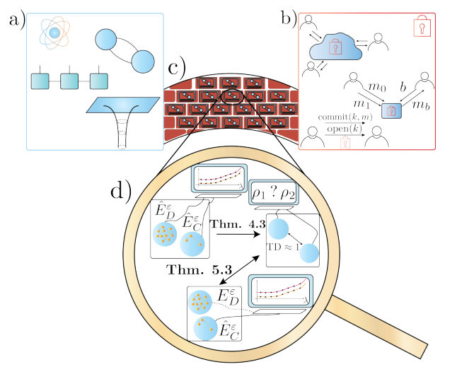
<figcaption class="paper-figure-caption"><b>Fig 1.</b> Figure 1: Depiction of the main conceptual results of this work, relating the worlds of physics and computa- tional cryptography. a) Physical world populated by (top to bottom) entanglement, matrix product states, AdS/CFT correspondence; b) Computational cryptography world with (top to bottom) multiparty compu- tation, oblivious transfer and commitments; c) Bridge between physical and computational cryptography worlds; d) Zoom in on the building block of the bridge, with relations between (clockwise from the upper-left corner) fully-computational pseudoentanglement, EFI pairs, and inefficiently-distillable pseudoentanglement.</figcaption>
</figure>
<figure class="paper-figure-card">
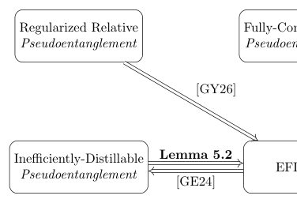
<figcaption class="paper-figure-caption"><b>Fig 2.</b> Figure 2: Relations of pseudoentanglement with computational cryptography.1</figcaption>
</figure>
</div>
<p><strong>Summary.</strong> This work establishes a rigorous connection between pseudoentanglement, a concept in quantum information theory, and the existence of cryptographic primitives called EFI pairs. By proving the equivalence between these concepts, the authors show that pseudoentanglement serves as a minimal, fundamental assumption for quantum cryptography. This bridges insights from quantum resource theory directly into the field of computational security.</p>
<p><strong>Why it may be interesting.</strong> It provides a deep theoretical link between resource theories (entanglement) and computational complexity assumptions, which is foundational for understanding the limits of quantum cryptography.</p>
<details>
<summary>Detailed structure</summary>
<p><strong>Main problem.</strong> The paper investigates the fundamental connection between the concept of pseudoentanglement and the necessary assumptions required for computational cryptography.</p>
<p><strong>Main result.</strong> The existence of pseudoentanglement, under two different operational definitions, is shown to be a sufficient and necessary condition for the existence of EFI pairs, thereby bridging quantum information theory and cryptography.</p>
<p><strong>Method.</strong> The authors establish mathematical relations between operational instances of pseudoentanglement and the hierarchy of minimal assumptions for computational cryptography, utilizing technical lemmas on entanglement measures and state distinguishability.</p>
<p><strong>Model / system.</strong> The study focuses on quantum states, specifically families of states exhibiting pseudoentanglement, and the cryptographic primitive known as EFI pairs (efficiently preparable, statistically far, and computationally indistinguishable pairs).</p>
<p><strong>Key observables.</strong> Computational entanglement measures, trace distance between state families, and the existence/non-existence of EFI pairs.</p>
<p><strong>Important parameters / regimes.</strong> The security parameter $\lambda$, the error tolerance $\epsilon(\lambda)$, and the entanglement gap bounds $c(\lambda)$ and $d(\lambda)$.</p>
<p><strong>Assumptions / limitations.</strong> The underlying state families for pseudoentanglement are assumed to be efficiently preparable for the cryptographic constructions to hold.</p>
<p><strong>Figures summary.</strong> Figure 1 conceptually maps physical worlds (entanglement, AdS/CFT) to computational cryptography worlds via the relationship between pseudoentanglement and EFI pairs. Figure 2 details the implications, such as Fully-computational pseudoentanglement $\implies$ EFI pairs.</p>
<p><strong>Paper structure.</strong> The paper develops the connection by first establishing the sufficiency of pseudoentanglement for EFI pairs using different operational definitions, and then proving the equivalence between these definitions and the existence of EFI pairs.</p>
</details>
<details>
<summary>Abstract</summary>
<p>The advent of pseudoentanglement and computational entanglement theory bootstrapped a wave of research at the intersection of computer science and information theory. In parallel, computational cryptography has undergone substantial development, prompted by the introduction of pseudorandom states and followed by the establishment of a baseline for the computational hardness required for quantum cryptography, from which EFI pairs emerge as a central primitive. We study the connection between pseudoentanglement and computational cryptography through EFI pairs. Our goal is to enable the use of resources arising from computational entanglement theory in the field of cryptography. For this, we establish the relation between operational instances of pseudoentanglement and the hierarchy of minimal assumptions for computational cryptography. We show that the existence of pseudoentanglement under two different operational definitions, with efficient state generation, is a sufficient condition for the existence of EFI pairs. Combined with a previously established result that the converse also holds under the second definition, this allows us to also demonstrate their equivalence. This places pseudoentanglement alongside other minimal assumptions in cryptography, not only offering an alternative perspective on this fundamental problem, but also building a bridge that allows insights from either area to inform the other. While proving these theorems, we introduce and demonstrate technical lemmas in quantum information and computational entanglement theory, relating the computational entanglement measures to the distance between states, establishing distinguishing conditions for mixtures of two families given pairwise distances between their states, and demonstrating the first continuity relation for a computational entanglement measure.</p>
</details>
<p><sub><a href="#top">↑ back to top</a></sub></p>

<p><a id="paper-2609.28635"></a></p>
<h3 id="continuity-of-regularized-channel-renyi-divergences"><a href="http://arxiv.org/abs/2609.28635v1">Continuity of Regularized Channel Rényi Divergences</a></h3>
<p><strong>Authors:</strong> Jinzhao Wang, Yuxiang Yang<br>
<strong>Type:</strong> theory · <strong>Category:</strong> quantum information and computing · <strong>PDF:</strong> <a href="https://arxiv.org/pdf/2609.28635v1">https://arxiv.org/pdf/2609.28635v1</a><br>
<strong>Analysis basis:</strong> full PDF text, analyzed in chunks</p>
<div class="figure-strip-hint">↔ Scroll figures horizontally</div>
<div class="paper-figures-scroll">
<figure class="paper-figure-card">
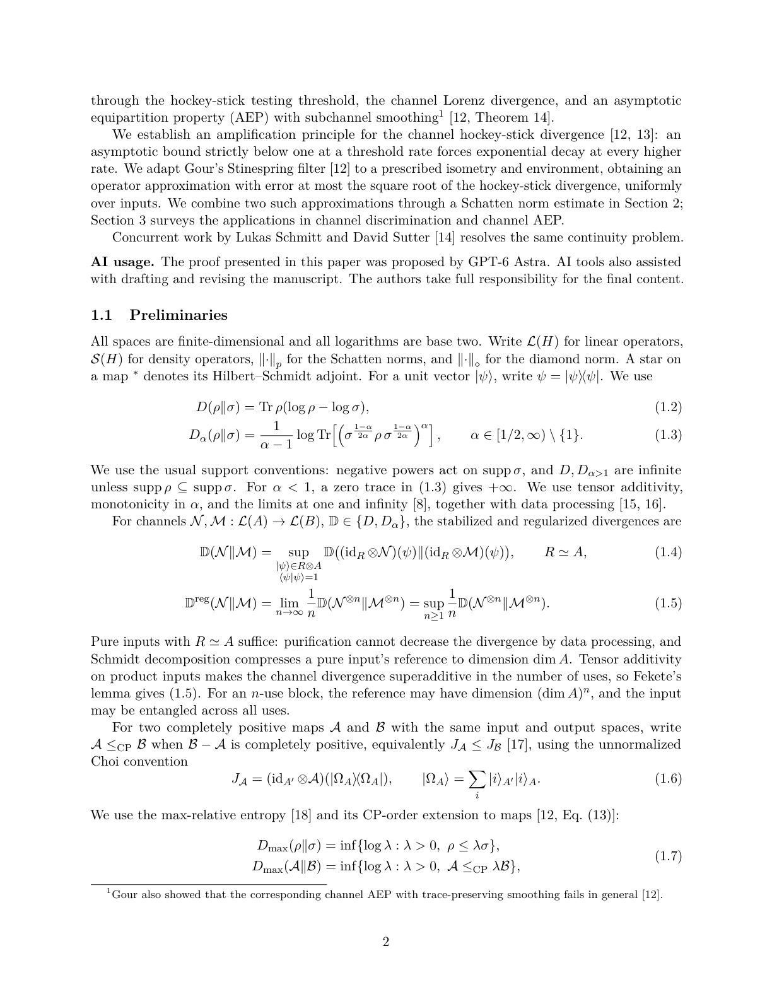
<figcaption class="paper-figure-caption"><b>Fig 1.</b> Low-resolution page preview, page 2</figcaption>
</figure>
<figure class="paper-figure-card">
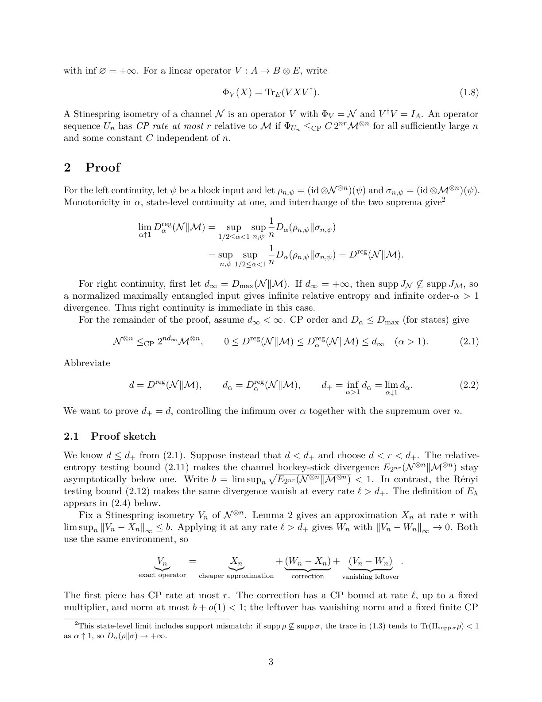
<figcaption class="paper-figure-caption"><b>Fig 2.</b> Low-resolution page preview, page 3</figcaption>
</figure>
<figure class="paper-figure-card">
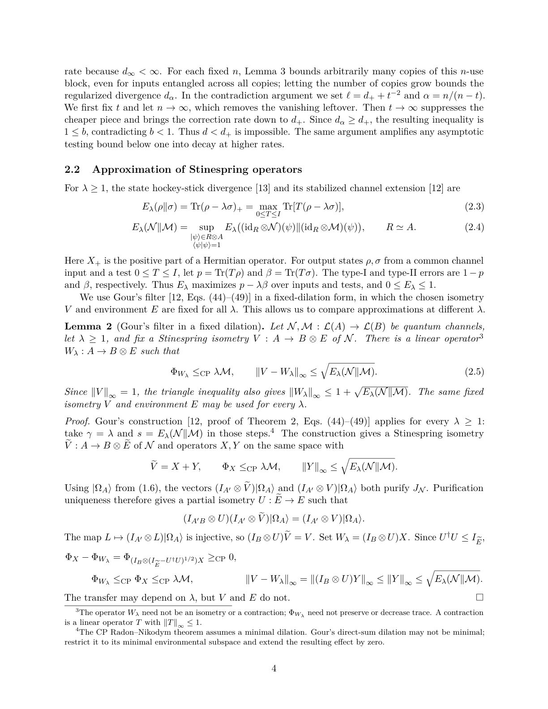
<figcaption class="paper-figure-caption"><b>Fig 3.</b> Low-resolution page preview, page 4</figcaption>
</figure>
<figure class="paper-figure-card">
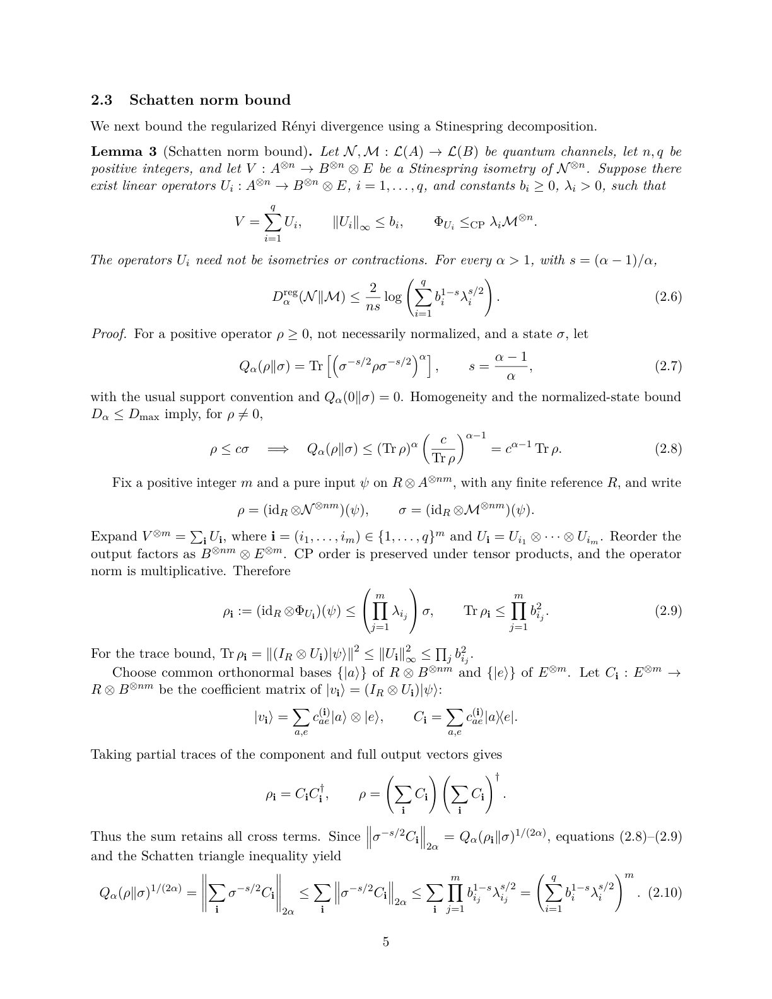
<figcaption class="paper-figure-caption"><b>Fig 4.</b> Low-resolution page preview, page 5</figcaption>
</figure>
<figure class="paper-figure-card">
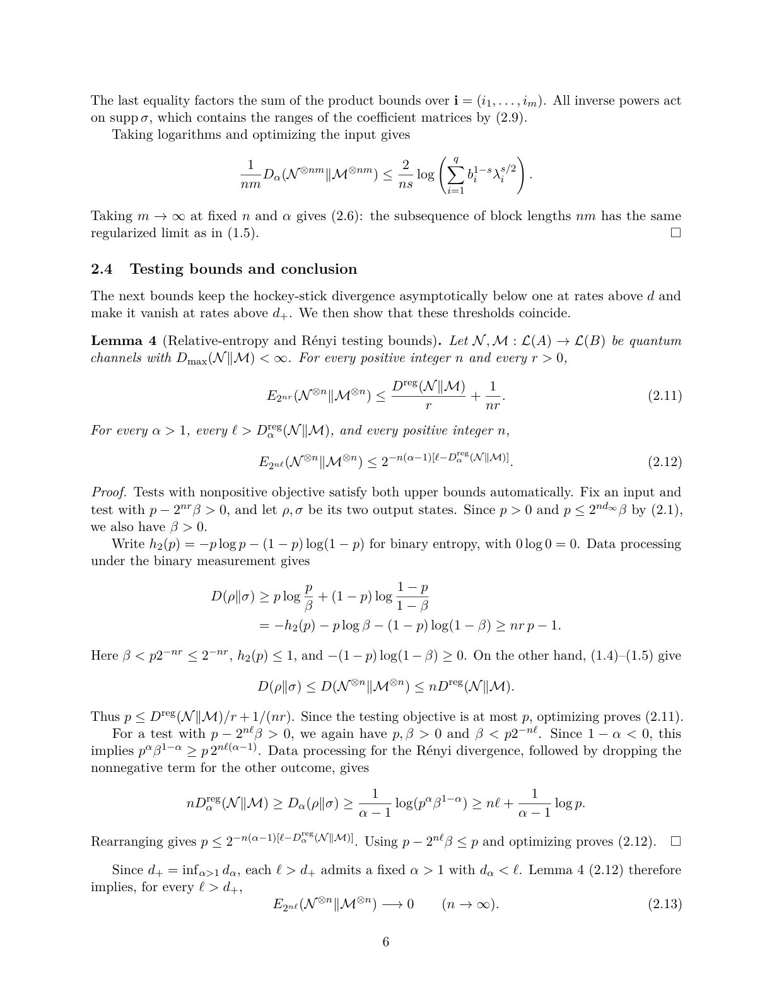
<figcaption class="paper-figure-caption"><b>Fig 5.</b> Low-resolution page preview, page 6</figcaption>
</figure>
</div>
<p><strong>Summary.</strong> This paper rigorously proves that the regularized Rényi divergence of quantum channels converges to the regularized relative entropy as the Rényi order approaches one. By establishing this continuity, the authors derive powerful results concerning quantum hypothesis testing, including sharp zero-one laws and asymptotic equipartition properties for quantum channels.</p>
<p><strong>Why it may be interesting.</strong> This work provides fundamental mathematical tools for quantifying distinguishability between quantum processes (channels), which is crucial for understanding channel capacity and the limits of quantum communication protocols.</p>
<details>
<summary>Detailed structure</summary>
<p><strong>Main problem.</strong> The paper proves the continuity of the regularized, stabilized sandwiched Rényi divergence of quantum channels as the Rényi order approaches one.</p>
<p><strong>Main result.</strong> The limit of the regularized Rényi divergence equals the regularized relative entropy, and this result yields strong converses for quantum hypothesis testing and channel discrimination.</p>
<p><strong>Method.</strong> The proof utilizes advanced tools from quantum information theory, including Stinespring decompositions, Schatten norm estimates, and asymptotic analysis of block-encoded testing bounds.</p>
<p><strong>Model / system.</strong> The analysis focuses on finite-dimensional quantum channels, $N$ and $M$, mapping between the spaces of linear operators $\mathcal{L}(A) 	o \mathcal{L}(B)$. The context is quantum hypothesis testing and channel capacity.</p>
<p><strong>Key observables.</strong> Regularized Rényi Divergence ($D_{	ext{reg}}^\alpha(N\|M)$), Regularized Relative Entropy ($D_{	ext{reg}}(N\|M)$), and quantum hypothesis testing error bounds.</p>
<p><strong>Important parameters / regimes.</strong> Rényi order $\alpha$, block length $n$, and the max-relative entropy $d_\infty$.</p>
<p><strong>Assumptions / limitations.</strong> The analysis assumes finite-dimensional spaces and relies on the existence of Stinespring isometries for the core proofs.</p>
<p><strong>Figures summary.</strong> No specific figures are described, but the text references mathematical theorems and lemmas (e.g., Lemma 2, Lemma 3) that build the proof structure.</p>
<p><strong>Paper structure.</strong> The paper establishes the continuity theorem (Theorem 1) by relating the Rényi divergence to the relative entropy. It then uses this result to derive strong converses for channel discrimination and proves the Subchannel Asymptotic Equipartition Property (Corollary 6) and the sharp zero-one law (Corollary 8).</p>
</details>
<details>
<summary>Abstract</summary>
<p>We prove that the regularized, stabilized sandwiched Rényi divergence of finite-dimensional quantum channels converges to their regularized relative entropy as the Rényi order tends to one. The key tool is the channel hockey-stick divergence: Gour's Stinespring approximation bound and a Schatten norm estimate amplify an asymptotic bound below one into exponential decay at higher threshold rates. For channel pairs with finite max-relative entropy, known operational connections then give exponential strong converses for parallel and adaptive discrimination, a sharp zero--one testing law, and the subchannel asymptotic equipartition property.</p>
</details>
<p><sub><a href="#top">↑ back to top</a></sub></p>

<p><a id="paper-2609.30069"></a></p>
<h3 id="design-principles-for-ultra-high-rate-quantum-codes"><a href="http://arxiv.org/abs/2609.30069v1">Design Principles for Ultra-High-Rate Quantum Codes</a></h3>
<p><strong>Authors:</strong> Jong Yeon Lee, Koki Okada, Nishad Maskara, Kenta Kasai, Hengyun Zhou<br>
<strong>Type:</strong> theory · <strong>Category:</strong> quantum information and computing · <strong>PDF:</strong> <a href="https://arxiv.org/pdf/2609.30069v1">https://arxiv.org/pdf/2609.30069v1</a><br>
<strong>Analysis basis:</strong> full PDF text, analyzed in chunks</p>
<div class="figure-strip-hint">↔ Scroll figures horizontally</div>
<div class="paper-figures-scroll">
<figure class="paper-figure-card">
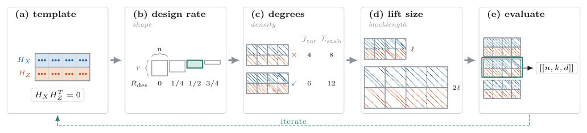
<figcaption class="paper-figure-caption"><b>Fig 1.</b> FIG. 1. Design heuristics for ultra-high-rate quantum codes. (a) The construction template—a protograph together with a lift strategy—fixes which blocks are nonzero and enforces HXHT Z = 0. (b) The design rate fixes the shape: counting qubit–check incidences gives nJtot = rLstab, so Rdes = 1−r/n. (c) At fixed encoding rate the degree parameters Jtot and Lstab are linked together; ensemble analysis suggests Jtot ≥6 is desirable, and higher degree tends to increase distance. (d) The lift size ℓ, written P for the circulant constructions of Sec. III, fixes the blocklength, n = bqℓ, where bq is the number of qubit blocks in the protograph; the shape and the row/column weights are unchanged. (e)...</figcaption>
</figure>
<figure class="paper-figure-card">
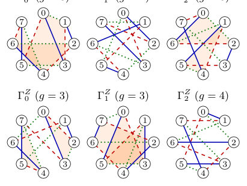
<figcaption class="paper-figure-caption"><b>Fig 2.</b> FIG. 2. Pairing graphs of the J = 3, L = 8 array of Eq. (7). In ΓX j the color-i edges are the pairs of Mij read down column j; in ΓZ i they are read across row i. Colors 0, 1, 2 are drawn as blue solid, red dashed, and green dotted lines. Every color class is a perfect matching, so each graph is J-regular on the L block-column indices, and g is the length of its shortest cycle. A cycle of length r here forces a Tanner cycle of length at most 2r. Shaded regions are triangles on the combined graph, each forcing a Tanner 6-cycle.</figcaption>
</figure>
<figure class="paper-figure-card">
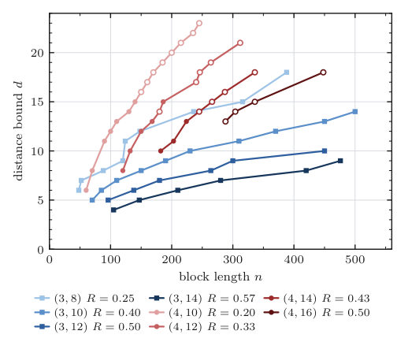
<figcaption class="paper-figure-caption"><b>Fig 3.</b> FIG. 3. Distance frontier of the halved non-CSS search. Best distance d reached at or below blocklength n for eight (J, L) families, where J is the number of check block rows in one basis, L the number of block columns, and Rdes = 1 −2J/L the design rate. Filled markers are exact distances from a completed exhaustion; open markers are up- per bounds from a logical-operator witness.</figcaption>
</figure>
<figure class="paper-figure-card">
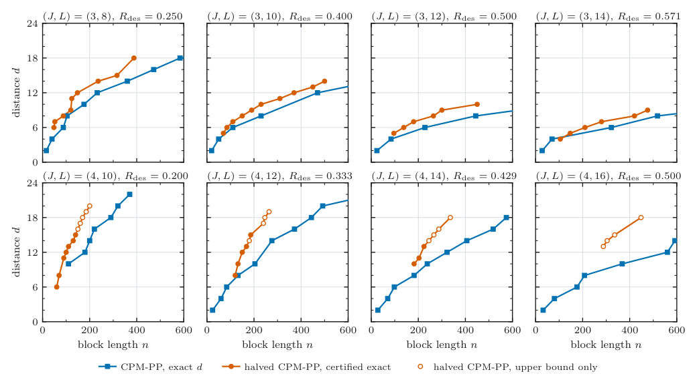
<figcaption class="paper-figure-caption"><b>Fig 4.</b> FIG. 4. Halving at matched degree parameters. The halved CPM-PP frontier (red) against the CPM-PP frontier (blue) at matched (J, L), where the halved construction improves the blocklength needed for a given code distance and rate, at the cost of being non-CSS.</figcaption>
</figure>
<figure class="paper-figure-card">
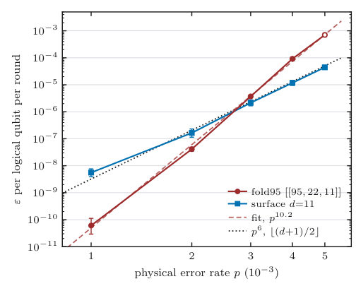
<figcaption class="paper-figure-caption"><b>Fig 5.</b> FIG. 5. Circuit-level [[95, 22, 11]] memory compari- son with the surface code. Logical error rate per log- ical qubit per round over Nr = 20 rounds. We compare the halved CPM-PP [[95, 22, 11]] with a hierarchical decoder (red), against a d = 11 rotated surface code with belief match- ing [47] (blue), under the same noise model.</figcaption>
</figure>
</div>
<p><strong>Summary.</strong> This paper introduces systematic design principles for creating ultra-high-rate quantum error-correcting codes, aiming to reduce qubit overhead for scalable quantum computers. The authors develop new code templates and use advanced analysis techniques to map out the performance trade-off frontier. This provides a powerful, systematic toolset for quantum code design.</p>
<p><strong>Why it may be interesting.</strong> While focused on abstract quantum codes, the rigorous mathematical framework for optimizing resource trade-offs (rate vs. distance) is highly relevant to designing physical quantum hardware architectures.</p>
<details>
<summary>Detailed structure</summary>
<p><strong>Main problem.</strong> The central challenge addressed is reducing the qubit overhead in quantum error correction (QEC) to achieve scalable fault-tolerant quantum computing.</p>
<p><strong>Main result.</strong> The authors developed systematic design principles and templates to explore the trade-offs among encoding rate, distance, and check weight, identifying numerous compact, high-performing quantum codes.</p>
<p><strong>Method.</strong> The work involves developing systematic design heuristics, analyzing code templates (like pair-partition constructions), and employing advanced techniques such as ensemble analysis and density evolution to estimate performance thresholds.</p>
<p><strong>Model / system.</strong> The focus is on designing and analyzing ultra-high-rate quantum codes, specifically low-density parity-check (qLDPC) codes, which are characterized by parameters like blocklength, distance, and encoding rate.</p>
<p><strong>Key observables.</strong> Encoding rate, distance (d), check weight, blocklength (n), and the residual error probability threshold.</p>
<p><strong>Important parameters / regimes.</strong> Physical error rates (e.g., 0.1%), degree distributions (row/column weight), and the design parameters $(J, L)$ for specific code families.</p>
<p><strong>Assumptions / limitations.</strong> The analysis relies on developing systematic frameworks to navigate the design space and uses ensemble estimates, which are noted to be heuristic screens rather than definitive proofs of the logical distance.</p>
<p><strong>Figures summary.</strong> Figures illustrate design heuristics, pairing graphs for code construction, and comparisons of Pareto frontiers between certified bounds and ensemble estimates.</p>
<p><strong>Paper structure.</strong> The paper progresses from identifying the core problem (overhead reduction) to developing systematic design principles, detailing specific construction templates (CPM-PP codes), and concluding with advanced analysis techniques like density evolution and population methods to estimate error thresholds.</p>
</details>
<details>
<summary>Abstract</summary>
<p>Reducing the qubit overhead of quantum error correction is a central challenge for scalable fault-tolerant quantum computing. Recent ultra-high-rate quantum codes offer a promising route toward this goal, with some constructions requiring as few as two physical data qubits per logical qubit. However, systematic principles for navigating the tradeoffs among encoding rate, distance, check weight, and blocklength remain lacking. Here, we develop and analyze principles for exploring this design space, and use them to design compact code constructions with improved performance. We develop code templates based on a pair-partition construction and a halving transformation that further reduces blocklength. Motivated by ensemble analysis of the degree distributions, we identify column weight as a key design parameter: increasing the column weight enables larger distances at compact blocklengths, at the cost of heavier checks. We find that at physical error rates of 0.1%, the benefits of increased distance often outweigh the penalty associated with heavier checks. Applying this framework, we identify numerous compact codes with favorable parameters, including [[90,21,11]], [[140,31,15]], and [[200,43,20]] non-CSS codes with check weight 10. Moreover, we develop symmetry-informed strategies for identifying low-weight logical bases. These results provide systematic strategies for designing ultra-high-rate quantum codes and navigating their Pareto frontier.</p>
</details>
<p><sub><a href="#top">↑ back to top</a></sub></p>

<p><a id="paper-2609.29884"></a></p>
<h3 id="efficient-synthesis-of-multi-controlled-toffoli-gates-with-ternary-cliffordmath660math-gates"><a href="http://arxiv.org/abs/2609.29884v1">Efficient Synthesis of Multi-Controlled Toffoli Gates with Ternary Clifford$+P_9$ Gates</a></h3>
<p><strong>Authors:</strong> Amit Saha, Francesco Arzani<br>
<strong>Type:</strong> theory · <strong>Category:</strong> quantum information and computing · <strong>PDF:</strong> <a href="https://arxiv.org/pdf/2609.29884v1">https://arxiv.org/pdf/2609.29884v1</a><br>
<strong>Analysis basis:</strong> full PDF text, analyzed in chunks</p>
<div class="figure-strip-hint">↔ Scroll figures horizontally</div>
<div class="paper-figures-scroll">
<figure class="paper-figure-card">
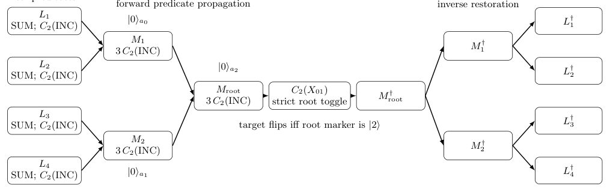
<figcaption class="paper-figure-caption"><b>Fig 1.</b> FIG. 1. Balanced qubit-qutrit predicate tree. Each leaf block Lj uses a ternary Clifford SUM gate and one state-selective C2(INC) operation to generate a temporary subtree marker. Each internal merge Mj uses one branch-local clean ancillary qutrit and three state-selective increments to combine two child markers with the corresponding middle control. After the complete all-controls-satisfied predicate reaches the root, the unique strict toggle C2(X01) acts on the target. The inverse tree restores all temporary marker states and returns every ancillary qutrit to |0⟩.</figcaption>
</figure>
<figure class="paper-figure-card">
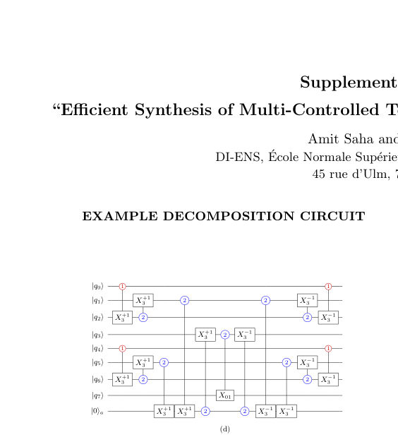
<figcaption class="paper-figure-caption"><b>Fig 2.</b> FIG. 2. Decomposition of a seven-controlled MCT gate. The logical controls are q0, . . . , q6 and the target is q7. Red circles denote activation on |1⟩, whereas blue circles denote activa- tion on |2⟩. The ternary Clifford SUM and SUM† gates gener- ate and uncompute the two leaf markers. The state-selective C2(INC)±1 operations propagate and remove the complete all-controls-satisfied predicate using the clean ancillary qutrit a. The root marker activates the unique strict target toggle C2(X01). The circuit requires 45P9 injections and one clean ancillary qutrit.</figcaption>
</figure>
</div>
<p><strong>Summary.</strong> This paper presents an efficient method to synthesize Multi-Controlled Toffoli gates using a ternary qutrit system. By employing a hierarchical, tree-based decomposition, it reduces the circuit depth from linear to logarithmic scaling for balanced control widths. This offers a practical, resource-efficient building block for advanced fault-tolerant quantum algorithms.</p>
<p><strong>Why it may be interesting.</strong> While focused on quantum computation, the resource optimization techniques (depth reduction, ancillary qubit minimization) are highly relevant to designing efficient quantum circuits for physical platforms like trapped ions or superconducting qubits where gate depth and ancillary overhead are primary limitations.</p>
<details>
<summary>Detailed structure</summary>
<p><strong>Main problem.</strong> The paper addresses the challenge of efficiently synthesizing Multi-Controlled Toffoli (MCT) gates, which are crucial primitives for fault-tolerant quantum computation.</p>
<p><strong>Main result.</strong> A novel intermediate-qutrit decomposition achieves logarithmic depth scaling ($\Theta(\log n)$) for balanced control widths, significantly outperforming linear-depth recursive baselines.</p>
<p><strong>Method.</strong> The authors propose a hierarchical, tree-based decomposition strategy utilizing temporary occupation of a third qutrit level to evaluate multi-controlled logic.</p>
<p><strong>Model / system.</strong> The work is set in a ternary qutrit model ($\mathcal{H}_3$) where the computation logic is confined to a binary subspace, using the third level as a temporary workspace state.</p>
<p><strong>Key observables.</strong> Logical P9 injection count ($6n+3$), clean ancillary qutrit count ($n-3/4$), and circuit depth ($\Theta(\log n)$).</p>
<p><strong>Important parameters / regimes.</strong> Control width ($n$), balanced core width ($m=2^h-1$), and the underlying resource model (ternary Clifford+P9).</p>
<p><strong>Assumptions / limitations.</strong> The decomposition relies on the temporary occupation of the qutrit level $|2
angle$, and comparisons are made within the specific ternary Clifford+P9 resource model.</p>
<p><strong>Figures summary.</strong> Figure 1 illustrates the overall decomposition structure, detailing the forward tree computation (leaf blocks, internal merges, root toggle) and the inverse traversal for state restoration.</p>
<p><strong>Paper structure.</strong> The paper develops the tree computation via leaf and internal merge blocks, analyzes the resource costs for balanced widths ($n=2h-1$), and then extends the construction to arbitrary widths by appending sequential controls, comparing results against established recursive baselines.</p>
</details>
<details>
<summary>Abstract</summary>
<p>Temporary occupation of qutrit levels can reduce the width and depth required for binary circuit logic in quantum computing. We introduce an efficient intermediate-qutrit decomposition of multi-controlled Toffoli gates with binary-subspace inputs and outputs. For balanced control widths $n=2^h-1$, the proposed decomposition is evaluated hierarchically through a tree, allowing independent subtree computations to proceed in parallel and reducing the depth from linear to logarithmic. The balanced low-depth construction requires $6n+3$ logical $P_9$ injections and $\frac{n-3}{4}$ clean ancillary qutrits. It matches the direct $P_9$ count of a recursively extended Clifford+$P_9$ baseline derived from the state-of-the-art work while using asymptotically one-quarter as many clean ancillas and replacing linear depth with logarithmic depth. For arbitrary control widths, a sequential extension preserves the $6n+3$ $P_9$ count but has depth $O(\log m+n-m)$ for a balanced core $m=2^h-1\leq n$, which is linear in the worst case over $n$. By reducing the resource overhead of a widely used reversible primitive, the proposed decomposition provides a practical building block for the design and compilation of more resource-efficient quantum algorithms in the fault-tolerant regime.</p>
</details>
<p><sub><a href="#top">↑ back to top</a></sub></p>

<p><a id="paper-2609.29406"></a></p>
<h3 id="evaluating-the-effect-of-the-order-of-optimization-passes-in-quantum-circuit-optimization"><a href="http://arxiv.org/abs/2609.29406v1">Evaluating the Effect of the Order of Optimization Passes in Quantum Circuit Optimization</a></h3>
<p><strong>Authors:</strong> Xiao-Ting Michelle To, Nils Quetschlich, Amr Elsharkawy, Martin Schulz, Robert Wille, Dieter Kranzlmüller<br>
<strong>Type:</strong> both · <strong>Category:</strong> quantum information and computing · <strong>PDF:</strong> <a href="https://arxiv.org/pdf/2609.29406v1">https://arxiv.org/pdf/2609.29406v1</a><br>
<strong>Analysis basis:</strong> full PDF text, analyzed in chunks</p>
<div class="figure-strip-hint">↔ Scroll figures horizontally</div>
<div class="paper-figures-scroll">
<figure class="paper-figure-card">
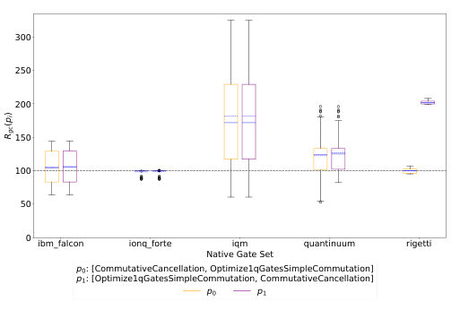
<figcaption class="paper-figure-caption"><b>Fig 1.</b> Fig. 2: Optimization results when using the pass pair {Com- mutativeCancellation, Optimize1qGatesSimpleCommutation} compared to the non-optimized circuit. The used metric here is the gate count and the results are separated by benchmarks.</figcaption>
</figure>
<figure class="paper-figure-card">
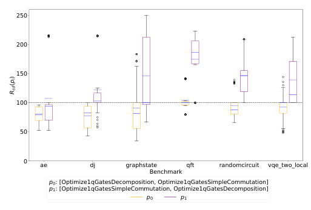
<figcaption class="paper-figure-caption"><b>Fig 2.</b> Fig. 3: Optimization results when using the pass pair {Opti- mize1qGatesDecomposition, Optimize1qGatesSimpleCommu- tation} compared to the non-optimized circuit. Here, the gate count is the used metric and the results are separated by native gate set on the x-axis.</figcaption>
</figure>
<figure class="paper-figure-card">
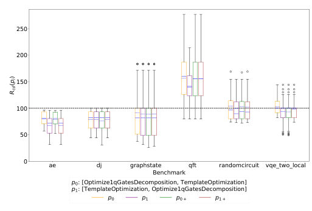
<figcaption class="paper-figure-caption"><b>Fig 3.</b> Fig. 4: Results of conducting correction experiments for the pass pair {Optimize1qGatesSimpleCommutation, TemplateOp- timization}, separated by the benchmark on the x-axis. The circuit depth is used as metric.</figcaption>
</figure>
<figure class="paper-figure-card">
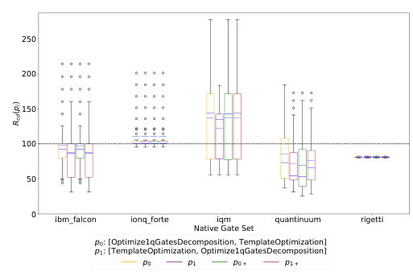
<figcaption class="paper-figure-caption"><b>Fig 4.</b> Fig. 5: Results of conducting correction experiments for the pass pair {Optimize1qGatesSimpleCommutation, TemplateOp- timization}, separated by the native gate set on the x-axis. The circuit depth is used as metric.</figcaption>
</figure>
<figure class="paper-figure-card">
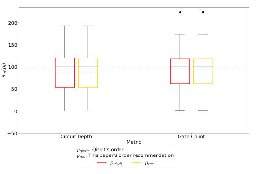
<figcaption class="paper-figure-caption"><b>Fig 5.</b> Fig. 6: Box plots illustrating Rm(pi) for Qiskit’s order pqiskit and this work’s recommended order prec, subdivided by the used metrics in the x-axis.</figcaption>
</figure>
</div>
<p><strong>Summary.</strong> This paper rigorously tests how the sequence in which quantum circuit optimization passes are applied affects the final circuit quality. By systematically testing permutations, the authors prove that the order matters, leading to the proposal of a recommended, optimized sequence. This work is vital for compiler developers aiming to minimize noise and resource usage on real quantum hardware.</p>
<p><strong>Why it may be interesting.</strong> While focused on compilation rather than physical dynamics, understanding the systematic limitations and dependencies within quantum hardware toolchains is crucial for designing algorithms that are robust to compiler choices, which is a key concern in quantum information theory.</p>
<details>
<summary>Detailed structure</summary>
<p><strong>Main problem.</strong> The paper investigates the critical, yet largely unexplored, issue of how the order of optimization passes affects the final quality of quantum circuit compilation.</p>
<p><strong>Main result.</strong> The order of optimization passes significantly impacts circuit quality, demonstrating clear dependencies between passes, although the best order depends heavily on the native gate set and surrounding compiler passes.</p>
<p><strong>Method.</strong> The authors systematically evaluated pairwise and multi-pass combinations of 16 optimization passes using Qiskit, measuring circuit depth and gate count across various benchmark circuits.</p>
<p><strong>Model / system.</strong> The study focuses on optimizing abstract quantum circuits intended for execution on near-term quantum hardware, using established quantum compilation toolchains.</p>
<p><strong>Key observables.</strong> Circuit depth and gate count (measured via metrics like R_m(p)).</p>
<p><strong>Important parameters / regimes.</strong> The set of 16 optimization passes, the target native gate set (e.g., IBM Falcon, IonQ Forte), and the specific benchmark circuit used.</p>
<p><strong>Assumptions / limitations.</strong> The analysis initially focuses on passes before hardware mapping, and the results are derived from testing specific, limited combinations of passes.</p>
<p><strong>Figures summary.</strong> Figure 1 illustrates the sequential phases of quantum circuit compilation. Figure 6 compares performance metrics (Depth, Gate Count) between Qiskit's default order and the paper's recommended order.</p>
<p><strong>Paper structure.</strong> The paper progresses from identifying the problem (order dependence) to systematic testing of pairwise combinations, analyzing correction mechanisms via repetition, and finally proposing a recommended, structured sequence based on pass classes.</p>
</details>
<details>
<summary>Abstract</summary>
<p>Quantum circuit optimization is critical for mitigating the noise inherent in current quantum hardware. Quantum compilers typically sequentially apply multiple optimizations (also called ``optimization passes'') to improve the circuit. The impact of the order in which these passes are executed has yet been largely unexplored. This paper investigates the significance of the order of optimization passes within quantum circuit compilation, specifically analyzing interactions between different optimization methods and quantifying their mutual influences. Using Qiskit's compiler, we systematically evaluate pairwise combinations of 16 selected optimization passes, measuring circuit depth and gate count across various benchmark circuits. Our findings indicate dependencies between certain optimization passes, demonstrating that the order of the passes affects the optimization quality. In some cases, the worse performing sequence can be corrected through repeated pass application. %such that they are as good as the best performing one by extending the sequence. Experiments on multi-pass sequences show that more than two optimization passes may have an impact on each other but that this always links to the previously found pairwise effects. We observe that it is important to initially choose the best order of optimization passes to get the best possible optimization for the given circuit. The experiments reveal some factors which are important to choose the best, or at least a good, order; among those, the resulting optimization sequence depends the most on the native gate set.</p>
</details>
<p><sub><a href="#top">↑ back to top</a></sub></p>

<p><a id="paper-2609.29098"></a></p>
<h3 id="evaluation-efficient-quantum-architecture-search-with-zx-calculus-based-topological-reuse"><a href="http://arxiv.org/abs/2609.29098v1">Evaluation-efficient quantum architecture search with ZX-calculus-based topological reuse</a></h3>
<p><strong>Authors:</strong> Chenlu Li, Hui Zeng, Dazhi Ding<br>
<strong>Type:</strong> theory · <strong>Category:</strong> quantum information and computing · <strong>PDF:</strong> <a href="https://arxiv.org/pdf/2609.29098v1">https://arxiv.org/pdf/2609.29098v1</a><br>
<strong>Analysis basis:</strong> full PDF text, analyzed in chunks</p>
<div class="figure-strip-hint">↔ Scroll figures horizontally</div>
<div class="paper-figures-scroll">
<figure class="paper-figure-card">
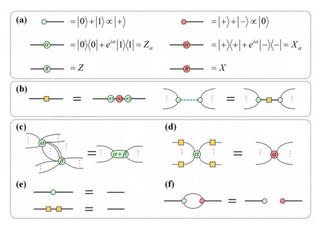
<figcaption class="paper-figure-caption"><b>Fig 1.</b> FIG. 1. Basic graphical elements and rewrite rules of ZX- calculus. (a) State and phase-gate representations of Z and X spiders. Green nodes denote Z-basis spiders, and red nodes denote X-basis spiders. A single-input single-output spider with phase π corresponds to the Pauli-Z or Pauli-X opera- tion. (b) Equivalent representations of the Hadamard gate and the Hadamard edge. (c) Spider-fusion rule. (d) Color- change rule. (e) Identity-removal rule. (f) Antipode rule. ZX-calculus contains other rewrite rules, which are not listed here; see Ref. [39] for details.</figcaption>
</figure>
<figure class="paper-figure-card">
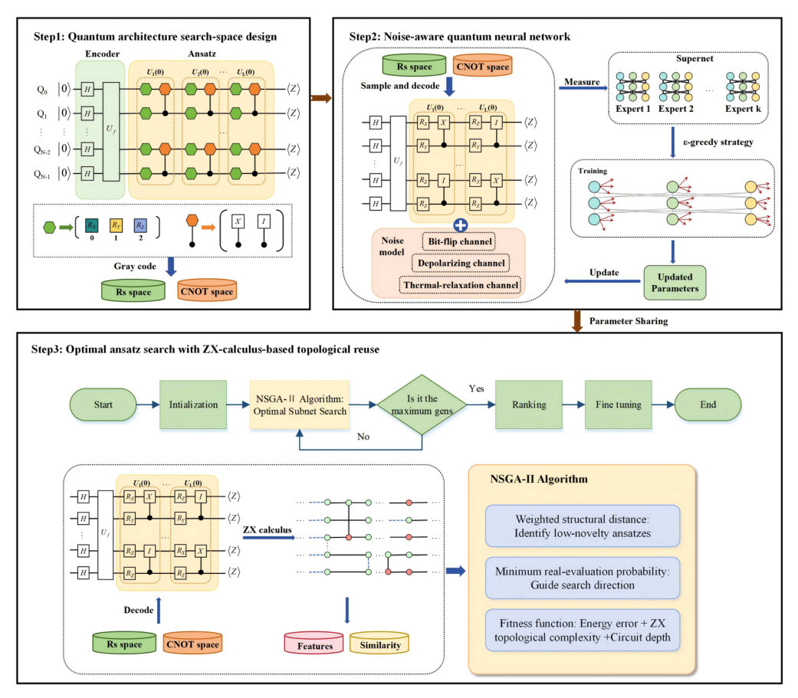
<figcaption class="paper-figure-caption"><b>Fig 2.</b> FIG. 2. Workflow of the ZX-QAS framework. In step 1, single-qubit rotation gates are mapped to the Rs space using a ternary Gray-code mapping, and entangling gates are represented by a sparse CNOT lookup table. In step 2, a sampled ansatz is decoded and combined with the noise model, and multiple supernet experts are trained. The shared parameters are updated through an ǫ-greedy strategy. In step 3, the search inherits the noise-aware supernet parameters. During evolutionary search, each candidate ansatz is converted into a ZX graph for topological feature extraction. A weighted structural distance, a minimum real-evaluation probability, and a fitness function are used to implement...</figcaption>
</figure>
<figure class="paper-figure-card">
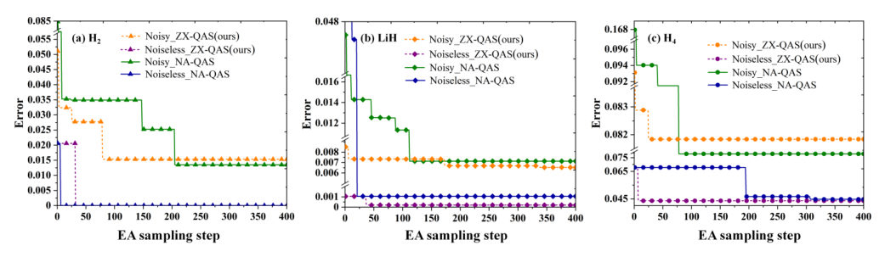
<figcaption class="paper-figure-caption"><b>Fig 3.</b> FIG. 3. Energy-error convergence curves. Panels (a), (b), and (c) show the results for H2, LiH, and H4, respectively. The horizontal axis denotes the evaluation step, and the vertical axis denotes the best-so-far energy error. The orange and purple curves show the results of the proposed ZX-QAS under noisy and noiseless conditions, respectively. The green and blue curves show the results of NA-QAS without ternary Gray-code implicit mapping and ZX topological reuse under noisy and noiseless conditions, respectively.</figcaption>
</figure>
<figure class="paper-figure-card">
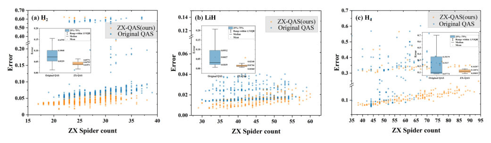
<figcaption class="paper-figure-caption"><b>Fig 4.</b> FIG. 4. Relation between ZX topological complexity and molecular ground-state energy error. Panels (a), (b), and (c) show the results for H2, LiH, and H4, respectively. The main plots show the distribution of candidate-ansatz errors as a function of the spider count after ZX simplification. The insets show box plots of the error distributions for ZX-QAS and Original QAS. Orange points denote the proposed ZX-QAS, while blue points denote Original QAS without ternary Gray-code implicit mapping and ZX topological reuse.</figcaption>
</figure>
<figure class="paper-figure-card">
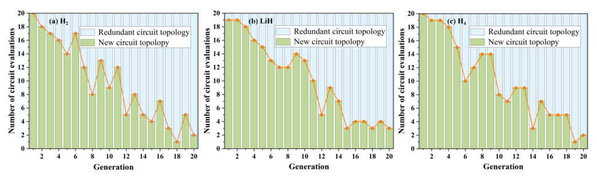
<figcaption class="paper-figure-caption"><b>Fig 5.</b> FIG. 5. Generational evolution of the ZX topological reuse ratio. Panels (a), (b), and (c) show the results for H2, LiH, and H4, respectively. The population size is 20 in each generation. Green bars denote new circuit topologies that require evaluation, while blue bars denote redundant circuit topologies identified by the ZX topological reuse mechanism.</figcaption>
</figure>
</div>
<p><strong>Summary.</strong> This paper introduces ZX-QAS, a novel, evaluation-efficient framework for Quantum Architecture Search designed for noisy quantum devices. It mitigates high computational costs by integrating ZX-calculus topological reuse with a Gray-code mapping to manage the search space. The approach successfully demonstrates stable convergence and significant cost reduction for simulating quantum many-body systems.</p>
<p><strong>Why it may be interesting.</strong> This work directly addresses the practical limitations of applying quantum algorithms to near-term hardware by providing a computationally efficient method to explore the vast space of quantum circuits.</p>
<details>
<summary>Detailed structure</summary>
<p><strong>Main problem.</strong> Quantum Architecture Search (QAS) for Variational Quantum Algorithms (VQA) suffers from prohibitively high evaluation costs due to the need for repeated training and evaluation of many candidate circuits.</p>
<p><strong>Main result.</strong> The proposed ZX-QAS framework significantly reduces the cost of expensive evaluations under noisy conditions while maintaining stable convergence for tasks like ground-state energy estimation.</p>
<p><strong>Method.</strong> The framework combines a noise-aware quantum neural network with a ZX-calculus topological reuse mechanism and uses a ternary Gray-code mapping to implicitly encode the search space.</p>
<p><strong>Model / system.</strong> The work targets NISQ devices applied to quantum chemistry and many-body physics, exemplified by the one-dimensional transverse-field Ising model. The search space is managed using ZX-calculus graphs and a Gray-code mapping.</p>
<p><strong>Key observables.</strong> Ground-state energy estimation, stable convergence, and the reduction in the number of required circuit evaluations.</p>
<p><strong>Important parameters / regimes.</strong> Noise parameters (e.g., $p_{BF}$ for bit-flip, $T_1, T_2$ for relaxation), the similarity threshold for topological reuse, and the number of qubits ($N$).</p>
<p><strong>Assumptions / limitations.</strong> The primary assumption is that structural similarity, quantifiable via ZX-calculus, can serve as an effective prior to reuse computational results and reduce the evaluation budget.</p>
<p><strong>Figures summary.</strong> Figures illustrate the basic graphical elements and rewrite rules of ZX-calculus, and a workflow diagram shows the three steps of the ZX-QAS framework: mapping, training, and reuse.</p>
<p><strong>Paper structure.</strong> The paper first identifies the high cost of QAS, then introduces the ZX-QAS framework which uses a ternary Gray-code mapping for efficient search space encoding. It details the noise-aware training using supernets and finally leverages the ZX-calculus for topological reuse during the search process.</p>
</details>
<details>
<summary>Abstract</summary>
<p>Variational quantum algorithm is a leading approach for quantum chemistry and many-body physics on noisy intermediate-scale quantum devices. The performance depends strongly on the structure of the parameterized quantum circuits. Quantum architecture search (QAS) can automate ansatz design. However, it requires repeated training and evaluation of many candidate circuits, leading to high evaluation cost. In this work, we propose a noise-aware quantum architecture search framework based on ZX-calculus topological reuse (ZX-QAS). The framework encodes the search space with a ternary Gray-code mapping and integrates a noise-aware quantum neural network with a ZX-calculus topological reuse mechanism. The effectiveness of the framework is validated through ground-state energy estimation tasks and one-dimensional transverse-field Ising model tasks under noisy conditions. The results show that the ZX-QAS exhibits stable convergence and remarkably reduces the cost of expensive evaluations under noisy conditions.</p>
</details>
<p><sub><a href="#top">↑ back to top</a></sub></p>

<p><a id="paper-2609.29168"></a></p>
<h3 id="hidden-magnetic-order-within-the-pressure-induced-superconducting-dome-of-ute2"><a href="http://arxiv.org/abs/2609.29168v1">Hidden magnetic order within the pressure induced superconducting dome of UTe2</a></h3>
<p><strong>Authors:</strong> Kaixin Ye, Lubin Wang, Dengpeng Yuan, Binbin Zhang, Yanan Zhang, Ye Chen, Yu Liu, Xin Lu, Chaofan Zhang, Qiuyun Chen, Shiyong Tan, Frank Steglich, Lin Jiao, Michael Smidman, Huiqiu Yuan<br>
<strong>Type:</strong> experiment · <strong>Category:</strong> strongly correlated electrons · <strong>PDF:</strong> <a href="https://arxiv.org/pdf/2609.29168v1">https://arxiv.org/pdf/2609.29168v1</a><br>
<strong>Analysis basis:</strong> full PDF text, analyzed in chunks</p>
<div class="figure-strip-hint">↔ Scroll figures horizontally</div>
<div class="paper-figures-scroll">
<figure class="paper-figure-card">

<figcaption class="paper-figure-caption"><b>Fig 1.</b> FIG. 1. Magnetic susceptibility of UTe2 under pres- sure showing hidden magnetic order. Temperature de- pendence of the a, ac magnetic susceptibility χ(T ), and b, the corresponding derivatives dχ/dT (T ), of UTe2 sample S1 un- der various pressures. The χ(T ) curves are shifted vertically for clarity. The black, blue and red arrows indicate the tran- sitions to the SC1, SC2 and HMO phases, respectively, which are defined by the peak or minima positions in the derivative. χ(T ) of c, sample S2 at 1.2 GPa, and d, S1 under various magnetic fields at 1.45 GPa.</figcaption>
</figure>
<figure class="paper-figure-card">

<figcaption class="paper-figure-caption"><b>Fig 2.</b> FIG. 3. Competition between AFM/WMO and SC2 under pressure revealed by applied magnetic fields. Temperature dependence of C/T of S3 under various mag- netic fields applied along the b-axis at a, 1.4 GPa, and b, 1.5 GPa. Temperature–magnetic field phase diagrams at c, 1.4 GPa and d, 1.5 GPa. The dashed lines are guides to the eye. Applying a magnetic field just below Pc1 leads to the abrupt disappearance of superconductivity, which is replaced by the 3D-AFM phase.</figcaption>
</figure>
<figure class="paper-figure-card">

<figcaption class="paper-figure-caption"><b>Fig 3.</b> FIG. 4. Phase diagram of UTe2. a T –P phase diagram of UTe2 up to 2.5 GPa. The triangular and circular sym- bols represent the data from ac magnetic susceptibility and ac calorimetry measurements respectively, while square sym- bols denote the transitions to the 3D-AFM and WMO phase extracted from Refs. 34 and 35. b Schematic 3D phase dia- gram of UTe2. PM denotes the paramagnetic phase, and FP denotes the field-polarized phase.</figcaption>
</figure>
</div>
<p><strong>Summary.</strong> This work uses transport and thermodynamic measurements on UTe2 under pressure to map out its complex phase diagram. It identifies a hidden antiferromagnetic order existing within the superconducting dome. The key finding is that this magnetic order vanishes at the same point where the material enters a bulk 3D antiferromagnetic phase, suggesting this hidden magnetism drives the unconventional superconductivity via a quantum critical point.</p>
<p><strong>Why it may be interesting.</strong> The strong interplay between magnetic fluctuations (AFM/FM) and unconventional superconductivity in a heavy-fermion material like UTe2 provides a rich platform for studying quantum critical points and pairing mechanisms relevant to strongly correlated electron systems.</p>
<details>
<summary>Detailed structure</summary>
<p><strong>Main problem.</strong> The paper investigates the nature of the magnetism responsible for unconventional superconductivity in UTe2, specifically focusing on hidden magnetic order within the superconducting dome.</p>
<p><strong>Main result.</strong> The measurements reveal a hidden antiferromagnetic order that vanishes concurrently with superconductivity when a high-pressure 3D antiferromagnetic phase is induced, suggesting a quantum critical point drives the pairing.</p>
<p><strong>Method.</strong> The study utilizes AC magnetic susceptibility and AC heat capacity measurements under applied pressure and magnetic fields to map out the phase diagram.</p>
<p><strong>Model / system.</strong> The physical system is UTe2, a heavy-fermion superconductor, whose superconducting dome is tuned by external pressure and magnetic fields to reveal competing magnetic phases.</p>
<p><strong>Key observables.</strong> Superconducting critical temperature (Tc), magnetic susceptibility ($\chi(T)$), heat capacity ($C/T$), and the presence/disappearance of Hidden Magnetic Order (HMO) and 3D Antiferromagnetic (AFM) transitions.</p>
<p><strong>Important parameters / regimes.</strong> Applied pressure (up to 1.5 GPa) and magnetic field strength (up to 7 T).</p>
<p><strong>Assumptions / limitations.</strong> The hidden magnetic order is assumed to be antiferromagnetic in nature, and its critical point is hypothesized to coincide with the maximum Tc of the superconducting dome.</p>
<p><strong>Figures summary.</strong> Figures show magnetic susceptibility confirming the HMO transition within the SC2 dome, heat capacity confirming the HMO anomaly, and phase diagrams illustrating the competition between SC2, HMO, and the 3D-AFM phase under varying P and H.</p>
<p><strong>Paper structure.</strong> The paper systematically measures magnetic and thermodynamic properties across a phase diagram, identifying the HMO within the SC2 dome, correlating its disappearance with the onset of the 3D-AFM phase, and extrapolating to a QCP at the maximum Tc.</p>
</details>
<details>
<summary>Abstract</summary>
<p>Unconventional superconductivity typically occurs near magnetic instabilities, and the corresponding spin fluctuations are widely believed to play a crucial role in mediating electron pairing. UTe$_2$ is a promising candidate for exhibiting multiple spin-triplet superconducting phases when tuning with applied pressure and magnetic fields, but the nature of the magnetism driving these unconventional pairing states is undetermined. Our measurements of UTe$_2$ under applied pressures and magnetic fields reveal the presence of a magnetic order hidden within the pressure-induced superconducting dome, which vanishes together with the superconductivity once there is sufficiently high pressure to induce the three-dimensional antiferromagnetic phase. Extrapolation of the phase boundary of the hidden magnetic order, which is most likely antiferromagnetic in nature, points to a zero-temperature quantum critical point that coincides with the maximum transition temperature of the pressure-induced superconducting dome, suggesting that it could corresponds to the parent magnetic phase of the critical antiferromagnetic spin fluctuations driving the triplet superconductivity. These findings advance the understanding of the interplay of magnetism and superconductivity in an exemplar candidate triplet superconductor, which is necessary for revealing the microscopic origin of the different unconventional superconducting phases.</p>
</details>
<p><sub><a href="#top">↑ back to top</a></sub></p>

<p><a id="paper-2609.30157"></a></p>
<h3 id="learning-and-interpreting-policies-for-simultaneous-entanglement-requests-in-quantum-networks"><a href="http://arxiv.org/abs/2609.30157v1">Learning and interpreting policies for simultaneous entanglement requests in quantum networks</a></h3>
<p><strong>Authors:</strong> Leon Rode, Sumeet Khatri, Supartha Podder<br>
<strong>Type:</strong> both · <strong>Category:</strong> quantum information and computing · <strong>PDF:</strong> <a href="https://arxiv.org/pdf/2609.30157v1">https://arxiv.org/pdf/2609.30157v1</a><br>
<strong>Analysis basis:</strong> full PDF text, analyzed in chunks</p>
<div class="figure-strip-hint">↔ Scroll figures horizontally</div>
<div class="paper-figures-scroll">
<figure class="paper-figure-card">

<figcaption class="paper-figure-caption"><b>Fig 1.</b> Figure 1: (a) A quantum network composed of N = 4 quantum memories organized as a ring, with µ = 5 parallel sublinks between neighboring nodes. Links move from an inactive state to an active state with probability pl = e−γ after which their age increments from zero to m⋆. (b) Entanglement swapping is performed across link N0-N1 and link N1-N2 with ages 1 and 2 respectively, estab- lishing a virtual link between N0-N2 with age 3. This enables experiment Xk to be placed on host nodes N0, N1, N2. The links are consumed for dk steps before being released.</figcaption>
</figure>
<figure class="paper-figure-card">

<figcaption class="paper-figure-caption"><b>Fig 2.</b> Figure 2: The starlink (left), dumbbell (center), and grid (right) topologies.</figcaption>
</figure>
<figure class="paper-figure-card">

<figcaption class="paper-figure-caption"><b>Fig 3.</b> Figure 3: The coloring of the starlink network topology and experiment set. The red nodes of the red experiment must be mapped to the red nodes on the starlink, and similarly for the green nodes on the green experiment. In each experiment, the uncolored nodes can be mapped to any node on the topology, including the colored ones.</figcaption>
</figure>
<figure class="paper-figure-card">

<figcaption class="paper-figure-caption"><b>Fig 4.</b> Figure 4: Comparison of success rate and mean step count between the starlink topology for P = 9 of the model, AGECRITICALFIRST, SHORTESTHOPFIRST, and DCTR.</figcaption>
</figure>
<figure class="paper-figure-card">

<figcaption class="paper-figure-caption"><b>Fig 5.</b> Figure 5: Success rate and mean step count as a function of γ, corresponding to link activation probability, on the dumbbell and grid topologies for P = 8 for both models, AGECRITICALFIRST, SHORTESTHOPFIRST, and DCTR.</figcaption>
</figure>
</div>
<p><strong>Summary.</strong> This work develops and tests reinforcement learning policies to optimally schedule simultaneous entanglement requests in quantum networks. By framing the problem as an MDP solved with DQN and MPNNs, the authors demonstrate that their learned policies robustly manage resource constraints better than existing heuristics. The paper also introduces a novel method using LLMs to extract interpretable policies from the trained model.</p>
<p><strong>Why it may be interesting.</strong> The focus on optimizing resource scheduling and managing complex, time-dependent quantum resources (entanglement) is highly relevant to the practical implementation of quantum networking protocols.</p>
<details>
<summary>Detailed structure</summary>
<p><strong>Main problem.</strong> The paper addresses the challenge of finding an optimal policy to schedule multiple, simultaneous entanglement requests (experiments) in a quantum network while minimizing resource usage and latency.</p>
<p><strong>Main result.</strong> The learned reinforcement learning policies significantly outperform baseline heuristics, maintaining high success rates even when the physical link activation probability is substantially lower than the baseline.</p>
<p><strong>Method.</strong> The problem is modeled as a Markov Decision Process (MDP) and solved using Double Deep Q-Networks (DQN) combined with Message Passing Neural Networks (MPNNs).</p>
<p><strong>Model / system.</strong> The system is a quantum network modeled as a multi-graph where tasks require generating virtual links via entanglement swapping over physical links with age and decoherence constraints.</p>
<p><strong>Key observables.</strong> Success rate (%), Mean Step Count, and the ability to maintain performance under varying link activation probabilities.</p>
<p><strong>Important parameters / regimes.</strong> Link activation probability ($p_l$), experiment duration ($d_k$), and the network topology (e.g., starlink, grid).</p>
<p><strong>Assumptions / limitations.</strong> Assumes entanglement swapping succeeds deterministically, and the LLM heuristic extraction is a promising method for interpreting complex learned policies.</p>
<p><strong>Figures summary.</strong> Figures compare the success rate and mean step count of various heuristics against the learned policy across different network topologies and noise levels.</p>
<p><strong>Paper structure.</strong> The paper first formulates the scheduling problem as an MDP, then applies DQN/MPNNs with curriculum training. It details performance comparisons against heuristics, and finally explores methods for policy interpretation using LLMs.</p>
</details>
<details>
<summary>Abstract</summary>
<p>Future quantum networks will make use of entanglement to perform numerous tasks, such as sending quantum information over long distances, distributed quantum computing, and quantum sensing. In general, these tasks will need to be performed simultaneously in various regions of a network, while minimizing resources and latency. We will thus require policies for scheduling link-level entanglement resources, and using the link-level entanglement to create various forms of multipartite entanglement required for every task. In this work, we address this problem using reinforcement learning. We formulate a Markov Decision Process for the problem and use double deep Q-networks (DQN) with Message Passing Neural Networks (MPNNs), experience replay buffers, and curriculum training to obtain policies. The key physical parameter is the probability of link-level entanglement generation, i.e., the link activation probability. We show that our policies maintain 100% success for up to 71% lower link activation probability than the baseline heuristics for a set of physically relevant network topologies. We then examine an additional constraint where experiment (task) placements are restricted to specific hardware types and demonstrate a similar advantage in performance over heuristics, with our policy maintaining at least an 80% success rate for up to a 59% lower link activation probability. Finally, we explore methods to interpret the learned policy by defining metrics enabling conclusions to be drawn about the model's behavior and by tasking a large language model (LLM) to derive a novel heuristic given example actions taken by the DQN-trained policy. We find that the LLM heuristic performs similarly to the DQN-trained policy in performance, indicating a promising method for interpretable policy extraction for large quantum networks, where direct training becomes computationally expensive.</p>
</details>
<p><sub><a href="#top">↑ back to top</a></sub></p>

<p><a id="paper-2609.28636"></a></p>
<h3 id="majorana-zero-modes-in-half-quantum-vortices-of-pair-density-wave-superconductors"><a href="http://arxiv.org/abs/2609.28636v1">Majorana zero modes in half-quantum vortices of pair density wave superconductors</a></h3>
<p><strong>Authors:</strong> Xinyu Sun, Hong Yao<br>
<strong>Type:</strong> theory · <strong>Category:</strong> strongly correlated electrons · <strong>PDF:</strong> <a href="https://arxiv.org/pdf/2609.28636v1">https://arxiv.org/pdf/2609.28636v1</a><br>
<strong>Analysis basis:</strong> full PDF text, analyzed in chunks</p>
<div class="figure-strip-hint">↔ Scroll figures horizontally</div>
<div class="paper-figures-scroll">
<figure class="paper-figure-card">

<figcaption class="paper-figure-caption"><b>Fig 1.</b> FIG. 1. Schematic phase diagram of the vortex lat- tice. The solid black curve denotes the estimated critical field Bc/Hc2 separating the full-vortex and half-vortex lat- tices as a function of the stiffness ratio κ/ρ. For B &lt; Bc, the two half-vortex flavors remain bound into full vortices, whereas for B &gt; Bc they separate and form a rhombus-like half-vortex lattice, as shown schematically. The blue and or- ange markers denote the two half-vortex flavors. The dashed line marks the upper critical field Hc2. The lower critical field Hc1 is not shown.</figcaption>
</figure>
<figure class="paper-figure-card">

<figcaption class="paper-figure-caption"><b>Fig 2.</b> FIG. 2. PDW stiffnesses and their evolution across the PDW phase. (a,b) Representative energy-curvature calculations at (V1, V2) = (−1.7, 0.6)t. (a) Energy cost of a global superconducting phase twist, obtained from fully self-consistent, auxiliary-BdG, and rigid-state calculations. (b) Energy cost of a PDW relative-phase deformation, ob- tained from fully self-consistent and auxiliary-BdG calcula- tions. Solid curves denote quadratic fits used to extract ρ and κ. (c) Thermodynamic-limit fully self-consistent ra- tio κ/ρ across the PDW region. (d) Representative cuts at fixed V2/t = 0.2, 0.4, 0.6, 0.8, showing that κ/ρ decreases to- ward unity upon approaching the PDW–DSM boundary. The...</figcaption>
</figure>
<figure class="paper-figure-card">

<figcaption class="paper-figure-caption"><b>Fig 3.</b> FIG. 3. Quartic coupling and half-vortex splitting scale. (a) Thermodynamic-limit ratio g/u extracted from the microscopic PDW mean-field energy. (b) Estimated criti- cal separation dc/ξ, obtained by combining g/u with the fully self-consistent stiffness ratio κ/ρ. Only points with available data in both calculations and V1/t ≤−1.5 are shown.</figcaption>
</figure>
<figure class="paper-figure-card">

<figcaption class="paper-figure-caption"><b>Fig 4.</b> FIG. 4. Half-vortex Majorana lattice and near-zero- energy states. (a) Effective Majorana hopping model for the two half-vortex flavors A and B. Same-flavor Majoranas are coupled by ts with hopping orientations ηA and ηB, while t0, t1, and t2 denote the inequivalent opposite-flavor hop- pings. (b) Majorana bands along Γ–K–M–Γ for representa- tive (η, d) = (−1, 1/2), (1, 1/2), (−1, 1/4), and (1, 1/4), with a = 1, t(0) c = 1, t(0) s = 0.3, and ξM = 1. (c,d) Spatial probabil- ity densities |ψM1|2 and |ψM2|2 of the two near-zero complex BdG eigenstates in a four-half-vortex configuration. Each state has weight on two half vortices of opposite flavor. With their particle-hole partners, they span...</figcaption>
</figure>
</div>
<p><strong>Summary.</strong> This theoretical work establishes a microscopic mechanism for the emergence of Majorana zero modes in PDW superconductors. By analyzing the energy cost of vortex splitting, the authors predict a field-induced transition to a half-vortex lattice. This lattice structure is then modeled using an effective Majorana Hamiltonian, revealing characteristic nodal or line-crossing features in the resulting electronic band structure.</p>
<p><strong>Why it may be interesting.</strong> The explicit derivation of a microscopic route from a superconducting state (PDW) to a topological superconducting state (Majorana lattice) via vortex physics is highly relevant for understanding emergent topological phases in condensed matter systems.</p>
<details>
<summary>Detailed structure</summary>
<p><strong>Main problem.</strong> The paper investigates the energetic stabilization of half-quantum vortices, which are theorized to bind Majorana zero modes, within Pair-Density-Wave (PDW) superconductors.</p>
<p><strong>Main result.</strong> The analysis shows that the core energy gain favors the splitting of full vortices into half-vortices, leading to a field-induced transition and the formation of a Majorana lattice with characteristic Dirac nodes or Fermi lines.</p>
<p><strong>Method.</strong> The study employs Hartree-Fock-Bogoliubov calculations to determine stiffnesses and Ginzburg-Landau couplings, followed by constructing and diagonalizing an effective Majorana hopping Hamiltonian in momentum space.</p>
<p><strong>Model / system.</strong> The system is a spinless honeycomb-lattice model exhibiting a PDW phase. The physics is governed by the competition between long-range logarithmic vortex interactions and short-range core energy contributions derived from the Ginzburg-Landau potential.</p>
<p><strong>Key observables.</strong> Superfluid stiffness ($
ho$), PDW relative-phase stiffness ($\kappa$), vortex energy difference ($\Delta E$), and the energy spectrum $E_{\pm}(k)$ of the Majorana Hamiltonian.</p>
<p><strong>Important parameters / regimes.</strong> The stiffness ratio $\kappa/
ho$, the critical magnetic field $B_c$, and the hopping-sign sector $\eta = \pm 1$.</p>
<p><strong>Assumptions / limitations.</strong> The long-range physics is dominated by logarithmic interactions, but the final equilibrium separation is dictated by the core energy stabilization mechanism.</p>
<p><strong>Figures summary.</strong> Figures illustrate the phase diagram showing the full-to-half-vortex transition and the Majorana band structure, which exhibits isolated Dirac nodes for certain parameters ($\eta=-1, d=1/2$) and direct band-touching loci for others ($\eta=1, d=1/2$).</p>
<p><strong>Paper structure.</strong> The paper progresses from establishing the PDW phase and calculating stiffnesses ($
ho, \kappa$), to determining the field-driven vortex fractionalization via core energy analysis, and finally constructing and analyzing the resulting effective Majorana lattice Hamiltonian in momentum space.</p>
</details>
<details>
<summary>Abstract</summary>
<p>Pair-density-wave (PDW) superconductors admit half-quantum vortices that can bind Majorana zero modes, but whether such defects are energetically stabilized in microscopic models remains unclear. We address this question in a spinless honeycomb-lattice model with a PDW phase. Microscopic Hartree-Fock calculations determine the superfluid stiffness $ρ$ and PDW relative-phase stiffness $κ$, and show that $κ/ρ$ approaches unity near the continuous PDW--Dirac-semimetal transition, strongly reducing the long-wavelength cost of vortex fractionalization. Combining this with microscopically extracted Ginzburg--Landau couplings, we show that vortex-core energetics favor fractionalization, producing a strongly enhanced splitting scale and a field-driven full-vortex--to--half-vortex lattice transition. We determine the resulting two-flavor half-vortex lattice structure and construct the associated Majorana lattice. Majorana hybridization produces geometry- and flux-dependent bands with Dirac nodes and zero-energy Fermi lines. Together, these results establish a microscopic route from PDW superconductivity to field-induced half-vortex and Majorana lattices.</p>
</details>
<p><sub><a href="#top">↑ back to top</a></sub></p>

<p><a id="paper-2609.29720"></a></p>
<h3 id="microscopic-origin-of-the-baumgartel-schausberger-winter-relaxation-spectrum-in-polymer-melts-and-particle-rafts"><a href="http://arxiv.org/abs/2609.29720v1">Microscopic origin of the Baumgärtel-Schausberger-Winter Relaxation Spectrum in Polymer Melts and Particle Rafts</a></h3>
<p><strong>Authors:</strong> Dario Nichetti, H. Henning Winter, Alessio Zaccone<br>
<strong>Type:</strong> theory · <strong>Category:</strong> statistical mechanics · <strong>PDF:</strong> <a href="https://arxiv.org/pdf/2609.29720v1">https://arxiv.org/pdf/2609.29720v1</a><br>
<strong>Analysis basis:</strong> full PDF text, analyzed in chunks</p>
<div class="figure-strip-hint">↔ Scroll figures horizontally</div>
<div class="paper-figures-scroll">
<figure class="paper-figure-card">

<figcaption class="paper-figure-caption"><b>Fig 1.</b> FIG. 1. Molecular-weight-constrained fit of G′ and G′′ for four monodisperse PBD melts, M = 44, 100, 207, and 410 kg mol−1</figcaption>
</figure>
<figure class="paper-figure-card">

<figcaption class="paper-figure-caption"><b>Fig 2.</b> FIG. 2. Reduced spectrum Hs/Hs 0 = x1/4 + x−2/3. The minimum marks the continuous transfer of dominance between the two cascades.</figcaption>
</figure>
<figure class="paper-figure-card">

<figcaption class="paper-figure-caption"><b>Fig 3.</b> FIG. 3. Exponent map. Open circles: nine 2dBSW sets [11]; star: (1/4, 2/3); cross: polymer BSW ≈(0.23, 0.67) [9].</figcaption>
</figure>
</div>
<p><strong>Summary.</strong> This paper develops a molecular theory to explain the universal two-branch Baumgärtel-Schausberger-Winter relaxation spectrum found in polymer melts. By independently calculating contributions from segmental motion and contour-length fluctuations, the authors predict the characteristic $   au^{-2/3} +     au^{1/4}$ form. This provides a fundamental, non-empirical understanding of how different microscopic processes contribute to the overall viscoelastic response of disordered materials.</p>
<p><strong>Why it may be interesting.</strong> The work provides a rigorous theoretical framework connecting microscopic dynamics (segmental motion, path fluctuations) to macroscopic viscoelastic signatures (BSW spectrum), which is a key goal in understanding complex many-body dynamics.</p>
<details>
<summary>Detailed structure</summary>
<p><strong>Main problem.</strong> To derive a molecular origin for the robust two-branch Baumgärtel-Schausberger-Winter (BSW) relaxation spectrum observed in entangled polymer melts and related disordered systems.</p>
<p><strong>Main result.</strong> The theory successfully predicts the BSW form ($   ext{H}_s(   au) \propto     au^{-2/3} +     au^{1/4}$) by showing a continuous transfer of stress relaxation between two independently derived molecular dynamics sectors.</p>
<p><strong>Method.</strong> The authors constructed a molecular theory analyzing chain segment motion relative to a screened environment, combining Gaussian-chain preaveraging with longitudinal primitive-path diffusion calculations.</p>
<p><strong>Model / system.</strong> The study focuses on entangled polymer melts and particle rafts, modeling the dynamics using a coarse-grained description involving two coupled dynamic sectors: fast segmental motion and slower cage/constraint field evolution.</p>
<p><strong>Key observables.</strong> The BSW spectrum ($    ext{G}'(\omega)$ and $  ext{G}''(\omega)$), characterized by two distinct algebraic relaxation cascades joined by a smooth minimum.</p>
<p><strong>Important parameters / regimes.</strong> The exponents characterizing the two sectors: $ au^{-2/3}$ (cooperative) and $  au^{1/4}$ (longitudinal/CLF).</p>
<p><strong>Assumptions / limitations.</strong> The theory assumes that the BSW spectrum arises from the coupling of two distinct dynamical sectors, and it tests the derived operator against experimental data without fitting spectral exponents.</p>
<p><strong>Figures summary.</strong> Figures illustrate the molecular-weight-constrained fit of $   ext{G}'$ and $  ext{G}''$ for PBD melts, showing common molecular-weight laws, and map the predicted $(1/4, 2/3)$ exponent point on existing BSW sets.</p>
<p><strong>Paper structure.</strong> The paper establishes the empirical BSW spectrum, develops a molecular theory based on segment motion relative to a cage, derives two independent power-law behaviors ($   au^{-2/3}$ and $    au^{1/4}$), and finally tests the combination against experimental polymer melt data.</p>
</details>
<details>
<summary>Abstract</summary>
<p>Entangled polymer melts exhibit the robust two-branch Baumgärtel-Schausberger-Winter (BSW) relaxation spectrum, while related spectra occur in nonpolymeric monodisperse disordered systems. In spite of the successful application of BSW to many different materials, a molecular derivation of these spectra is lacking. We construct a molecular theory in which a chain segment moves relative to a screened, dynamically responding multichain environment. Gaussian-chain preaveraging gives $M_{\rm seg}(Δm)\sim(Δm)^{-1/2}$, hence $λ_p\sim p^{3/2}$ and, after stress projection, $H(τ)\simτ^{-2/3}$. Independently, longitudinal primitive-path diffusion gives contour-length fluctuations with $H(τ)\simτ^{1/4}$. A molecular-weight-constrained implementation is tested simultaneously against experimental $G'(ω)$ and $G''(ω)$ data for four monodisperse polybutadiene (PBD) melts, without fitting spectral exponents or individual modal weights. The resulting BSW spectrum exhibits a continuous transfer from the fast cooperative to the slow constraint-renewal cascade before a finite-chain terminal edge. A common two-sector caged dynamics then connects polymers to particle rafts without assuming identical microscopic mechanisms.</p>
</details>
<p><sub><a href="#top">↑ back to top</a></sub></p>

<p><a id="paper-2609.30104"></a></p>
<h3 id="mqss-selector-rl-guided-pass-selection-for-an-mlir-compilation-pipeline"><a href="http://arxiv.org/abs/2609.30104v1">MQSS-Selector: RL-Guided Pass Selection for an MLIR Compilation Pipeline</a></h3>
<p><strong>Authors:</strong> Andre Youssefi, Ercüment Kaya, Minh Chung, Jorge Echavarria, Laura B. Schulz, Martin Schulz<br>
<strong>Type:</strong> theory · <strong>Category:</strong> quantum information and computing · <strong>PDF:</strong> <a href="https://arxiv.org/pdf/2609.30104v1">https://arxiv.org/pdf/2609.30104v1</a><br>
<strong>Analysis basis:</strong> full PDF text, analyzed in chunks</p>
<div class="figure-strip-hint">↔ Scroll figures horizontally</div>
<div class="paper-figures-scroll">
<figure class="paper-figure-card">

<figcaption class="paper-figure-caption"><b>Fig 1.</b> Figure 1: Illustration of the scheduling pipeline integrating device selection and phase ordering (i.e., compiler pass-sequence optimization) for a quantum program execution.</figcaption>
</figure>
<figure class="paper-figure-card">

<figcaption class="paper-figure-caption"><b>Fig 2.</b> Figure 2: a) Conceptual design of the unified scheduler (V1) - Hybrid Supervised + RL, where device selection and phase ordering are handled by interlinked modules. b) Conceptual design of the unified scheduler (V2) - Fully RL-based, combining device selection and phase ordering into a single action space for RL training.</figcaption>
</figure>
<figure class="paper-figure-card">

<figcaption class="paper-figure-caption"><b>Fig 3.</b> Figure 3: Decay schedules over training epochs. The DAEP trigger probability 𝑝𝐷𝐴𝐸𝑃, the DAEP magnitude coefficient 𝛼𝐷𝐴𝐸𝑃and the entropy coefficient 𝛼𝐻decay to zero, so that guidance and exploration vanish and the actor converges on exploiting the critic’s estimates. The learning rate 𝜂decays to a 𝛿&gt; 0 and thus remains active throughout training.</figcaption>
</figure>
<figure class="paper-figure-card">

<figcaption class="paper-figure-caption"><b>Fig 4.</b> Figure 4: Prediction analysis on initial models for the 128 MQT-Bench program set</figcaption>
</figure>
<figure class="paper-figure-card">

<figcaption class="paper-figure-caption"><b>Fig 5.</b> Fig. 4 shows the results on the MQT dataset. It displays the model’s fidelity predictions for the 128 MQT-bench programs on the chosen twelve backends. The results show a worse performance by MLP, compared to the other models. We expect fine tuning to improve the predictions. While SVM and KNN show good results for fidelity predictions, they may not be a fitting choice for algorithms in the unified scheduler. Their good performance is based on the limited data set. In a full deployment, we expect an even more diverse program set and a huge variance in program depths and, hence, we anticipate that these algorithms will perform less well in the scheduler in practice than they did in these...</figcaption>
</figure>
</div>
<p><strong>Summary.</strong> This paper introduces MQSS-Selector, a novel reinforcement learning framework designed to solve the complex problem of quantum program compilation. It unifies device selection and compiler pass optimization into a single scheduler to maximize performance metrics like fidelity and minimize latency. This is crucial for bridging classical HPC resources with error-prone quantum hardware in the NISQ era.</p>
<p><strong>Why it may be interesting.</strong> It addresses the critical software stack challenges in realizing fault-tolerant quantum computation by providing a learning-based optimization layer for resource-constrained NISQ devices.</p>
<details>
<summary>Detailed structure</summary>
<p><strong>Main problem.</strong> The challenge of optimizing quantum program compilation by jointly selecting the best quantum device and the optimal sequence of compiler optimization passes.</p>
<p><strong>Main result.</strong> The authors propose MQSS-Selector, an RL-guided framework that unifies device selection and pass ordering to optimize multiple objectives simultaneously.</p>
<p><strong>Method.</strong> They leverage Reinforcement Learning (RL) agents interacting with a simulated quantum software stack environment to learn optimal scheduling policies.</p>
<p><strong>Model / system.</strong> The system targets High Performance Computing-Quantum Computing (HPCQC) infrastructures operating in the Noisy Intermediate-Scale Quantum (NISQ) era, dealing with quantum circuits and compilation pipelines.</p>
<p><strong>Key observables.</strong> Fidelity (Hellinger fidelity), compilation time, scheduling latency, program depth, and operation count.</p>
<p><strong>Important parameters / regimes.</strong> Device topology, gate fidelity, queueing delay, and the set of available compiler passes.</p>
<p><strong>Assumptions / limitations.</strong> The joint optimization problem is shown to be NP-hard, necessitating heuristic/approximation algorithms like RL.</p>
<p><strong>Figures summary.</strong> Figure 1 illustrates the integrated scheduling pipeline combining device selection and phase ordering optimization for quantum program execution.</p>
<p><strong>Paper structure.</strong> The paper frames the problem as a Design Space Exploration (DSE) and proposes a unified RL selector, detailing components for device selection (using supervised ML) and pass ordering (using RL).</p>
</details>
<details>
<summary>Abstract</summary>
<p>High Performance Computing (HPC) and Quantum Computing (QC) systems are increasingly converging towards unified High Performance Computing-Quantum Computing (HPCQC) infrastructures, driven by a growing need to bridge classical and quantum workflows, which affects all levels of the system stack, from the hardware to compilers and runtimes, all the way to applications. However, today's QC devices are still in the Noisy Intermediate-Scale Quantum (NISQ) era, are error-prone and resource-limited, and therefore require specialized optimizations and topology mappings to achieve sufficient fidelity. This places special emphasis on proper compilation and optimization within the overall quantum software stack. Many existing stacks remain fragmented, with separate components responsible for device selection, compiler-pass optimization, and job queue scheduling. This paper proposes a unified, learning-based selector that integrates these disparate stages into a cohesive framework. Our proposed selector scheme leverages reinforcement learning and deep learning models that can be extended to simultaneously optimize multiple objectives -- such as fidelity, compilation time, and scheduling latency -- while dynamically adapting to circuit characteristics and device conditions.</p>
</details>
<p><sub><a href="#top">↑ back to top</a></sub></p>

<p><a id="paper-2609.30159"></a></p>
<h3 id="non-abelian-sheaf-quantum-ldpc-codes-good-and-magical"><a href="http://arxiv.org/abs/2609.30159v1">Non-Abelian sheaf quantum LDPC codes: good and magical</a></h3>
<p><strong>Authors:</strong> Zimu Li, Fuchuan Wei, Zhengyi Han, Zi-Wen Liu<br>
<strong>Type:</strong> theory · <strong>Category:</strong> quantum information and computing · <strong>PDF:</strong> <a href="https://arxiv.org/pdf/2609.30159v1">https://arxiv.org/pdf/2609.30159v1</a><br>
<strong>Analysis basis:</strong> full PDF text, analyzed in chunks</p>
<div class="figure-strip-hint">↔ Scroll figures horizontally</div>
<div class="paper-figures-scroll">
<figure class="paper-figure-card">

<figcaption class="paper-figure-caption"><b>Fig 1.</b> Figure 2: Cup product CZ gate on 2D toric codes defined by the hypergraph product of the double cover of a triangle. Each purple curve represents a physical CZ gate. The binary bits 00, 01, 10, 11 on each 0-cube are illustrated by their color: blue, green, brown, red. The configuration is slightly different from the conventional CZ gate [20, 52, 53] due to the definition of cubical complex. Nevertheless, the resulting logical operation is still a CZ action.</figcaption>
</figure>
</div>
<p><strong>Summary.</strong> This paper introduces a general framework for constructing advanced non-Abelian quantum LDPC codes by utilizing sheaf theory and cup products. It achieves codes with desirable parameters like constant rate and linear distance, extending error correction beyond standard Pauli stabilizers. These results offer a concrete theoretical tool for investigating non-Abelian topological phases and magic state generation.</p>
<p><strong>Why it may be interesting.</strong> The extension of quantum error correction theory into non-Abelian structures and the connection to topological phases of matter is highly relevant for understanding robust quantum computation.</p>
<details>
<summary>Detailed structure</summary>
<p><strong>Main problem.</strong> Developing and analyzing non-Abelian quantum low-density parity-check (qLDPC) codes to extend quantum error correction beyond the limitations of traditional Pauli stabilizer codes.</p>
<p><strong>Main result.</strong> The authors constructed non-Abelian qLDPC codes with constant encoding rate and linear distance by gauging sheaf codes via cup products, providing a foundation for exploring non-Abelian phases.</p>
<p><strong>Method.</strong> The work employs advanced mathematical tools from algebraic topology, specifically gauging sheaf codes using cup products within a framework of cochain complexes.</p>
<p><strong>Model / system.</strong> The model involves non-Abelian quantum codes, which connect quantum error correction, phases of matter, and computational resources. The construction is based on generalizing sheaf codes using cell complexes.</p>
<p><strong>Key observables.</strong> Code distance (characterized by the general Knill–Laflamme condition), encoding rate, and the presence of 'long-range magic' throughout the code space.</p>
<p><strong>Important parameters / regimes.</strong> Constant encoding rate and linear distance ($   ext{[[N} \Theta(N), \Theta(N)]]$); the structure of the underlying cell complex $X$.</p>
<p><strong>Assumptions / limitations.</strong> The analysis requires moving beyond the traditional Pauli stabilizer setting and carefully handling logical constraints in the gauged code space.</p>
<p><strong>Paper structure.</strong> The paper establishes the general problem, develops the mathematical framework using sheaf theory and cup products, constructs the qLDPC codes, and analyzes their properties like distance and magic state preparation.</p>
</details>
<details>
<summary>Abstract</summary>
<p>Non-Abelian quantum codes connect quantum error correction, phases of matter, and computational resources. In this work, we develop a general framework for constructing non-Abelian quantum low-density parity-check (qLDPC) codes by gauging sheaf codes via cup products and use it to obtain families with constant encoding rate and linear distance. We resolve the coupled logical constraints using explicit representatives to characterize the full gauged code space. We provide a fundamental treatment of code distance based on the general Knill--Laflamme condition and combine expansion with cleaning to establish protection against arbitrary low-weight errors. We further construct an almost-good family whose entire code space exhibits long-range magic. Gauging and ungauging also enable logical Clifford measurements that prepare encoded magic states. These results extend good qLDPC codes beyond the Pauli stabilizer setting and provide a concrete foundation for exploring non-Abelian phases beyond geometric locality and pursuing the no low-energy trivial magic conjecture.</p>
</details>
<p><sub><a href="#top">↑ back to top</a></sub></p>

<p><a id="paper-2609.28802"></a></p>
<h3 id="on-certifying-source-sampling-hardness-in-quantum-generative-modeling"><a href="http://arxiv.org/abs/2609.28802v1">On Certifying Source Sampling Hardness in Quantum Generative Modeling</a></h3>
<p><strong>Authors:</strong> Chen-Yu Liu, Leonardo Placidi, Enrico Rinaldi<br>
<strong>Type:</strong> theory · <strong>Category:</strong> quantum information and computing · <strong>PDF:</strong> <a href="https://arxiv.org/pdf/2609.28802v1">https://arxiv.org/pdf/2609.28802v1</a><br>
<strong>Analysis basis:</strong> full PDF text, analyzed in chunks</p>
<div class="figure-strip-hint">↔ Scroll figures horizontally</div>
<div class="paper-figures-scroll">
<figure class="paper-figure-card">

<figcaption class="paper-figure-caption"><b>Fig 1.</b> Low-resolution page preview, page 2</figcaption>
</figure>
<figure class="paper-figure-card">

<figcaption class="paper-figure-caption"><b>Fig 2.</b> Low-resolution page preview, page 3</figcaption>
</figure>
<figure class="paper-figure-card">

<figcaption class="paper-figure-caption"><b>Fig 3.</b> Low-resolution page preview, page 4</figcaption>
</figure>
<figure class="paper-figure-card">

<figcaption class="paper-figure-caption"><b>Fig 4.</b> Low-resolution page preview, page 5</figcaption>
</figure>
<figure class="paper-figure-card">

<figcaption class="paper-figure-caption"><b>Fig 5.</b> Low-resolution page preview, page 6</figcaption>
</figure>
</div>
<p><strong>Summary.</strong> This work analyzes the theoretical link between quantum generative models and the hardness of sampling from unknown data sources. It proves that transferring sampling hardness requires solving a difficult distribution certification problem, which demands exponentially many samples. Consequently, practitioners cannot generally assume that polynomial sampling efforts are enough to justify claiming source-level sampling hardness.</p>
<p><strong>Why it may be interesting.</strong> It provides a rigorous theoretical constraint on the claims made in quantum machine learning, showing that simply training a quantum model does not guarantee that the unknown data source possesses the desirable computational hardness property.</p>
<details>
<summary>Detailed structure</summary>
<p><strong>Main problem.</strong> The paper investigates whether the sampling hardness property of a quantum generative model can be reliably transferred to an unknown, real-world data-generating distribution when trained on finite classical samples.</p>
<p><strong>Main result.</strong> Transferring sampling hardness requires certifying a global relationship between the two distributions, which necessitates an exponentially large number of samples for high-entropy distributions, meaning polynomial samples are generally insufficient.</p>
<p><strong>Method.</strong> The authors reduce the hardness transfer problem to a distribution certification problem, utilizing existing lower bounds from identity testing and total-variation distance analysis.</p>
<p><strong>Model / system.</strong> The focus is on Quantum Generative Models (QGMs) based on quantum circuit families, comparing the inherent hardness of the generator itself (generator-level hardness) versus the hardness of the unknown source distribution (source-level hardness).</p>
<p><strong>Key observables.</strong> Total-Variation Distance ($d_{TV}$), Sample Requirement ($m$), Min-Entropy ($h$), and the $\ell_1$-distance threshold ($
ho$).</p>
<p><strong>Important parameters / regimes.</strong> The required sample complexity is shown to scale exponentially with the entropy of the distribution, and the analysis distinguishes between the complexity of the known-target certification problem and statistical fitting.</p>
<p><strong>Assumptions / limitations.</strong> The analysis assumes the most favorable certification setting (known target distribution, unlimited computational power) and relies on established lower bounds for identity testing.</p>
<p><strong>Figures summary.</strong> Not specified.</p>
<p><strong>Paper structure.</strong> The paper first distinguishes between generator-level and source-level hardness, then establishes that transferring hardness requires solving a distribution certification problem, which is then bounded by known lower bounds derived from identity testing.</p>
</details>
<details>
<summary>Abstract</summary>
<p>Quantum generative models are often motivated by circuit families whose output distributions are believed to be classically hard to sample from. When such models are trained on ordinary classical datasets, however, this hardness does not automatically transfer to the unknown data-generating distribution. We show that transferring sampling hardness via total-variation closeness from a quantum model to an unknown source requires certifying a global relation between the two distributions, thereby reducing the problem to distribution certification. Combining this reduction with existing certification lower bounds yields an exponential sample requirement for the high-entropy distributions relevant to many sampling-hardness proposals. Consequently, polynomially many samples cannot, in general, justify attributing sampling hardness to an unknown data-generating distribution. Moreover, even classically trivial distributions, such as the uniform distribution and product distributions, require exponentially many samples to certify in the absence of structural assumptions. Our results clarify the role of sampling hardness in quantum generative modeling and distinguish generator-level hardness from source-level hardness when learning from ordinary datasets.</p>
</details>
<p><sub><a href="#top">↑ back to top</a></sub></p>
<hr>
<p>
<a href="index.html">← Index</a>
 · <a href="papers_04.html">← Previous</a> · <a href="papers_06.html">Next →</a>
</p>
<hr>

</body>
</html>
